MATERIAS
191 materias desde outubro de 2025
Monsoon FC 2 x 0
O tubarão do litoral segue na elite
Com vitória por 2 a 0 sobre o Guarany de Bagé, o Monsoon FC confirmou sua permanência no Campeonato Gaúcho e encerra o quadrangular com o objetivo alcançado. Um resultado que representa o trabalho, a...
Ler materia completaO litoral gaúcho merece o topo, merece a elite, e o Monsoon FC...
MENOS DUBAI, MAIS RIO GRANDE DO SUL
Enquanto muitos buscam inspiração em terras distantes e luxos artificiais, nós olhamos para as nossas raízes. Valorizamos o que é nosso: o suor na areia, o vento no rosto e a paixão que corre nas veia...
Ler materia completa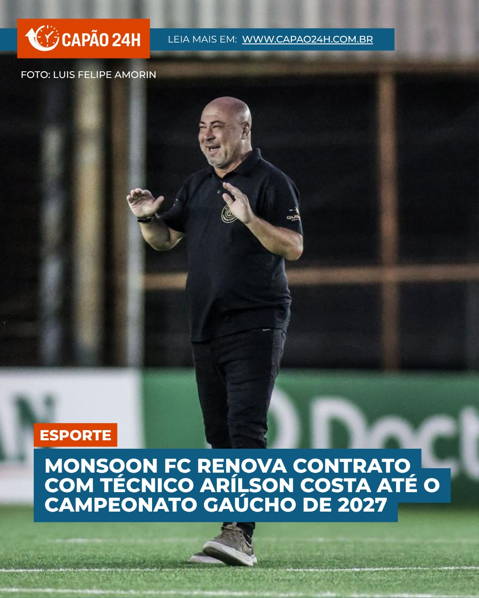
A semana foi marcada pelo anúncio da renovação de contrato entre o...
Leia a reportagem completa no site do Capão 24h. O Link está na bio
Leia a reportagem completa no site do Capão 24h. O Link está na bio.
Ler materia completa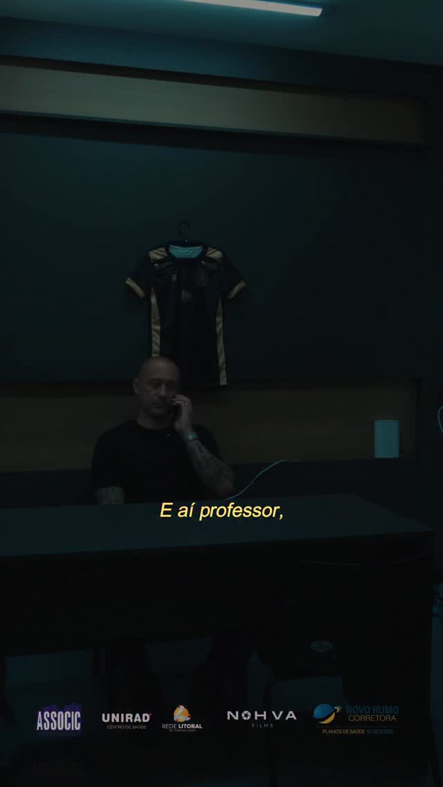
O convite foi aceito: Arílson Costa continua no comando do Monsoon FC
O convite foi aceito: Arílson Costa continua no comando do Monsoon FC
Quando há conexão dentro e fora de campo, o caminho é seguir construindo. Na praia, com a bola rolando e o olhar no horizonte, o projeto segue firme - com quem já mostrou que sabe liderar. Seguimos ...
Ler materia completa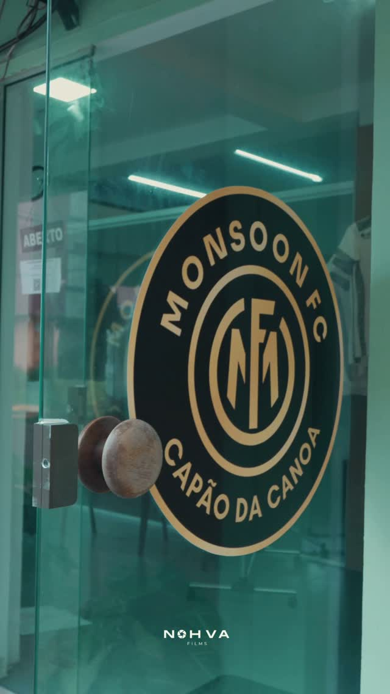
Do outro lado da linha, o futuro do Monsoon FC começa a ganhar forma
Sem anúncio, sem spoiler
Sem anúncio, sem spoiler. Um convite feito pelo Presidente e uma resposta que pode mudar o rumo da temporada e de 2027! Seguimos no aguardo do próximo lance
Ler materia completa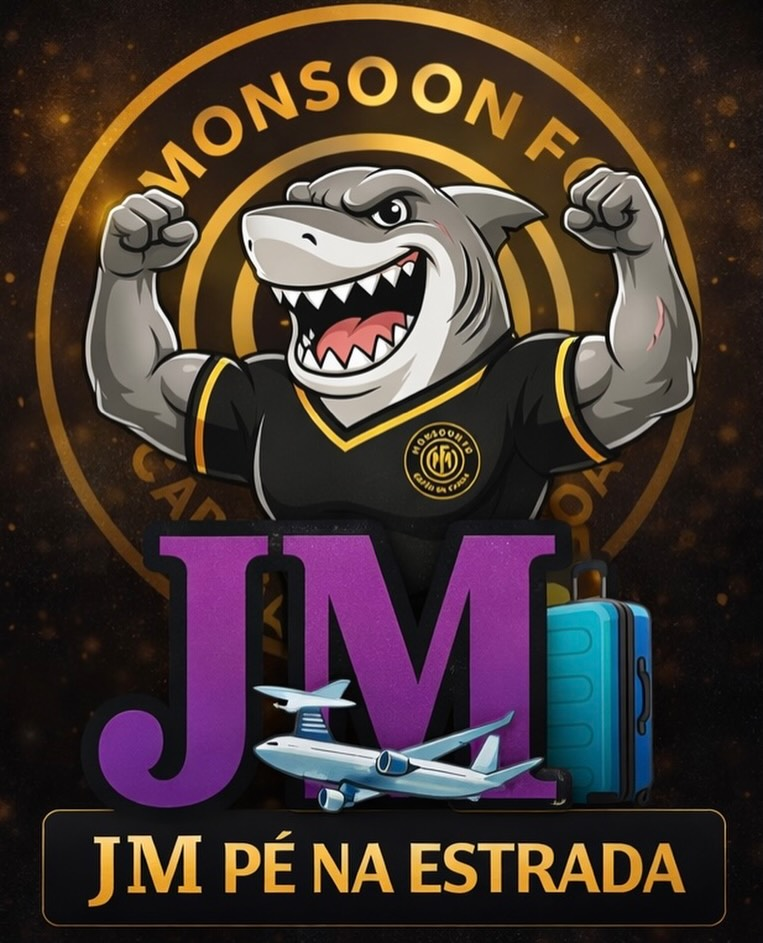
Grandes projetos se conectam com grandes parceiros
O Monsoon FC anuncia oficialmente a chegada da @jmpenaestrada como nova parceira do clube
O Monsoon FC anuncia oficialmente a chegada da @jmpenaestrada como nova parceira do clube. Uma união que representa movimento, crescimento e novos caminhos. Seguimos fortes. Seguimos juntos.
Ler materia completa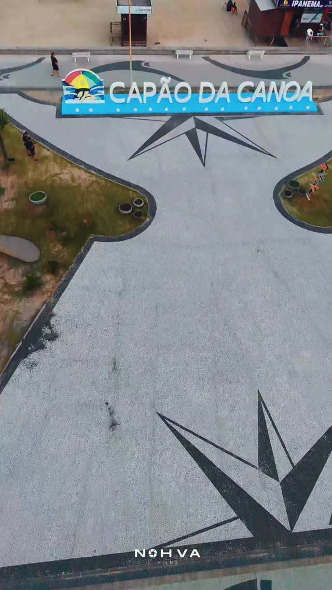
O Monsoon é caponense e é PRIMEIRA DIVISÃO
O Monsoon é caponense e é PRIMEIRA DIVISÃO
Com raça, suor e muito trabalho, garantimos nossa permanência na Série A do Campeonato Gaúcho. O Monsoon FC fincou suas raízes em Capão da Canoa e provou que o Litoral Norte tem força para bater de f...
Ler materia completa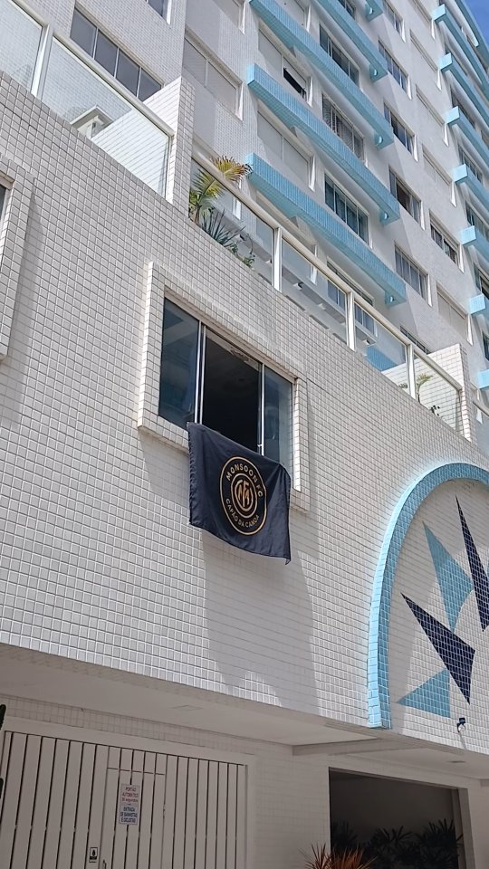
Ahhh que orgulho
Ahhh que orgulho!!!
Ler materia completa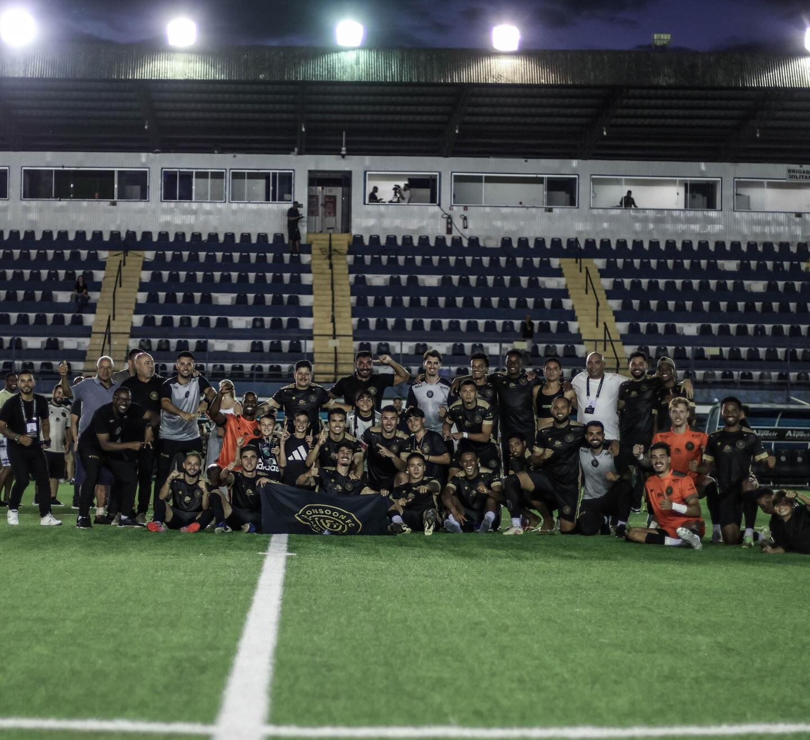
No futebol, quem acredita até o fim escreve as histórias mais bonitas
No futebol, quem acredita até o fim escreve as histórias mais bonitas
Com luta, união e coração, garantimos o Monsoon FC, o Litoral Norte, na elite do futebol gaúcho em 2027. Seguimos juntos. Seguimos na primeira divisão. O MONSOON FICA!
Ler materia completaHoje celebramos a força, a coragem e a inspiração de todas as mulheres
Hoje celebramos a força, a coragem e a inspiração de todas as mulheres
Assim como o mar que nunca para, a mulher também é movimento, determinação e transformação. No Monsoon FC acreditamos que grandes histórias são construídas com respeito, paixão e união dentro e fora ...
Ler materia completa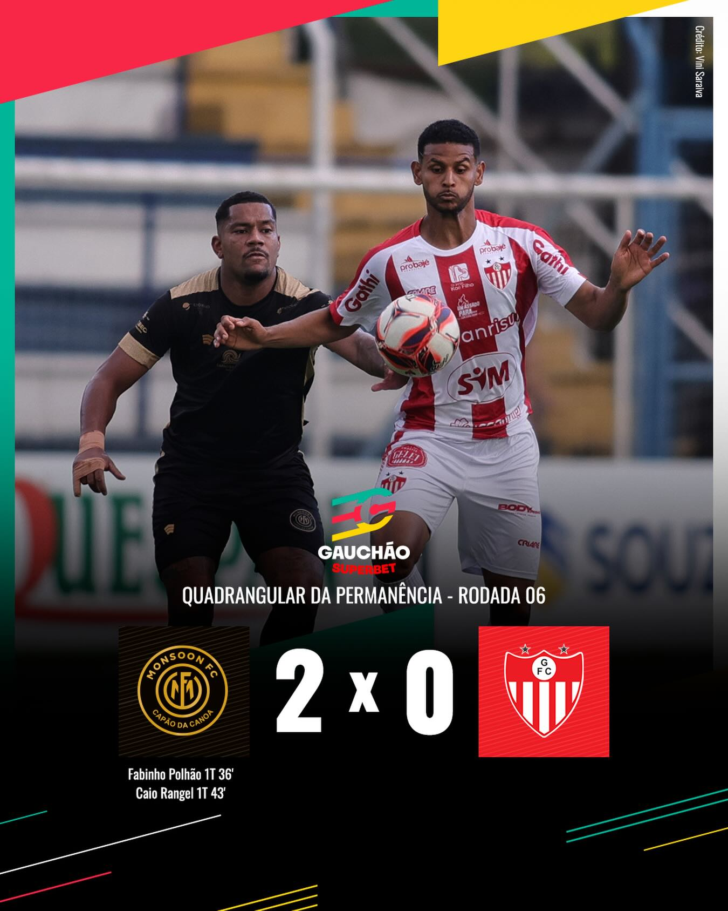
VITÓRIA DA PERMANÊNCIA
VITÓRIA DA PERMANÊNCIA
O Monsoon venceu o Guarany e confirmou a permanência na elite. O Tubarão é guerreiro!
Ler materia completaGooollll dele @caiorangel96
Monsoon FC 2 x Guarany 0
Vamos !!! Monsoon FC 2 x Guarany 0
Ler materia completa
Goooolll, dele @95fabinho
Goooolll, dele @95fabinho
Vamos Monsoon FC 1 x Guarany 0.
Ler materia completa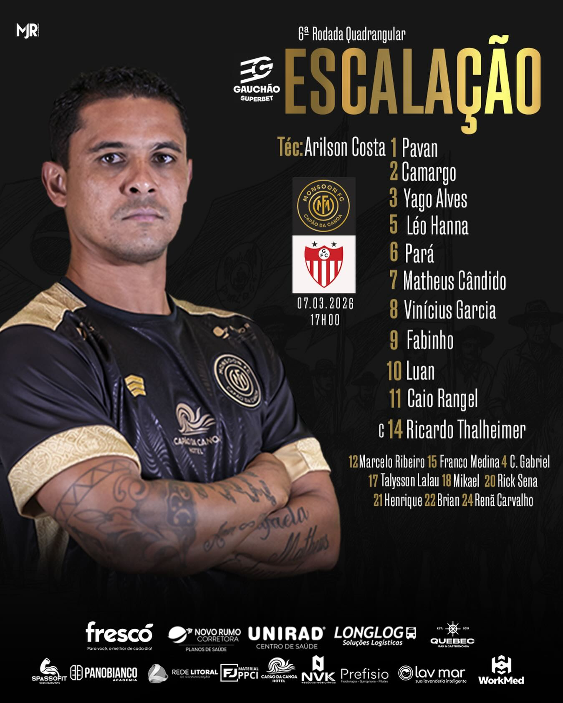
Tubarão escalado pelo técnico Arilson Costa para o último confronto do Gauchão
Tubarão escalado pelo técnico Arilson Costa para o último confronto do Gauchão
Jogo acontece hoje as 17h, no Est. Novelletto Neto. Acompanhe ao vivo pelo canal da GZH no youtube.
Ler materia completa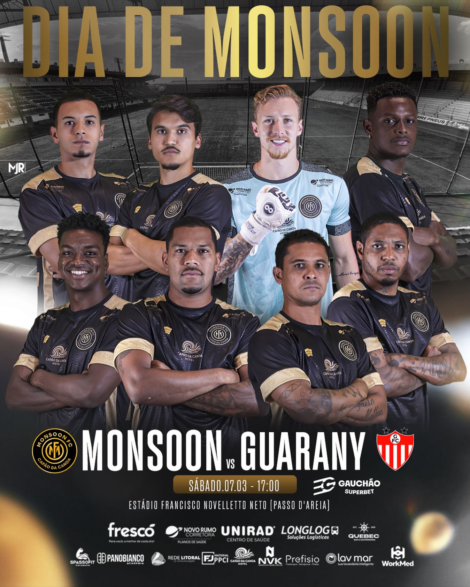
Hoje é dia de lutar até o último segundo
Hoje é dia de lutar até o último segundo
Vamos ! Acompanhe ao vivo o confronto entre Monsoon FC e Guarany de Bagé, pelo canal do youtube do GZH.
Ler materia completa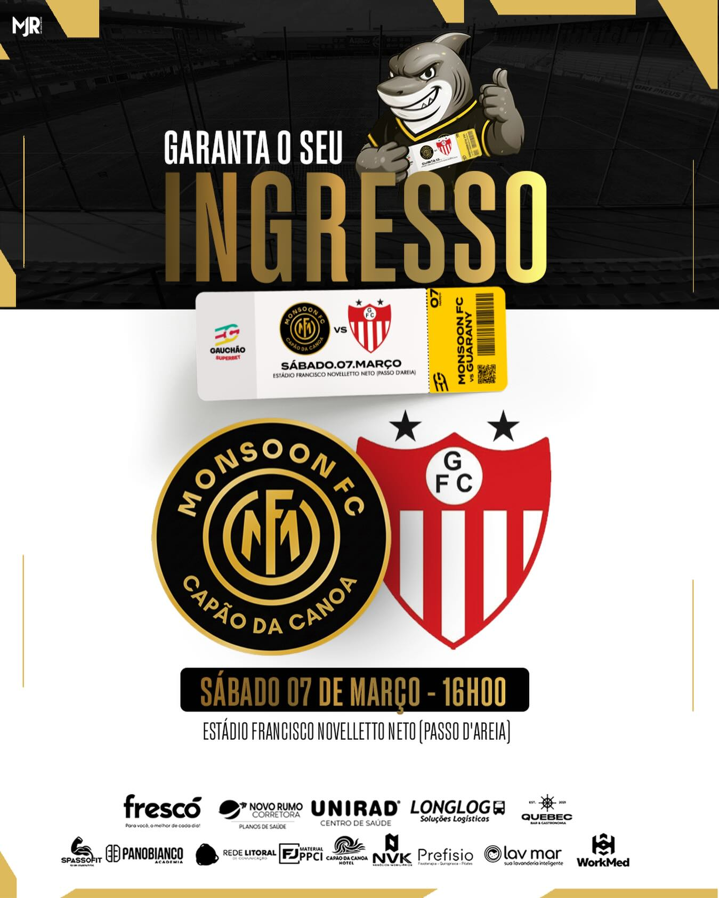
É decisão
Os ingressos para o último confronto do quadrangular já estão disponíveis
Os ingressos para o último confronto do quadrangular já estão disponíveis. Acesse o link no destaque INGRESSOS e garanta seu lugar ao lado do tubarão do litoral.
Ler materia completaRecebemos no Telacast o Vítor Hugo, CEO do Monsoon Futebol Clube
O episódio completo está disponível no nosso canal no YouTube
No episódio, ele comenta sobre dois cenários referentes à Arena Esportiva, detalhando possibilidades estratégicas, estrutura, planejamento e os caminhos estudados para fortalecer o projeto do clube. U...
Ler materia completaRecebemos no Telacast o Vítor Hugo, CEO do Monsoon Futebol Clube
O episódio completo está disponível no nosso canal no YouTube
No episódio, ele compartilha sua trajetória inicial no esporte, os desafios do começo da carreira e a importância que o futebol teve na construção da sua vida pessoal e profissional. Uma conversa insp...
Ler materia completa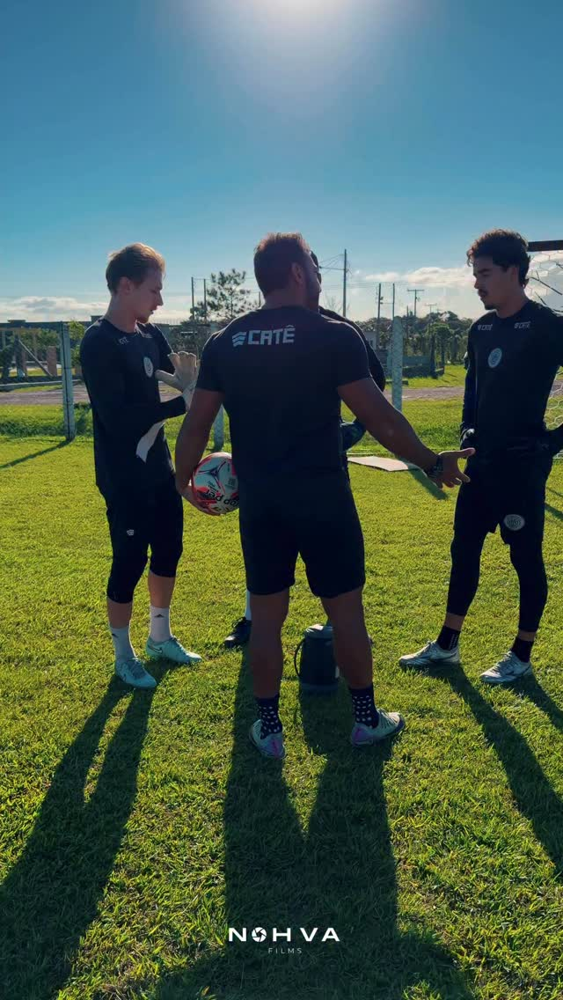
Últimos ajustes no
A semana é de foco total e intensidade em cada lance
A semana é de foco total e intensidade em cada lance. O tubarão do litoral segue trabalhando forte para o último confronto da rodada. Seguimos juntos, passo a passo, em busca do nosso objetivo.
Ler materia completaÚltima rodada e nós queremos o teu apoio e tua presença torcedor
Última rodada e nós queremos o teu apoio e tua presença torcedor
Sábado tem duelo contra o Guarany de Bagé, no Passo dAreia. O tubarão do litoral entra em campo com raça e foco até o último minuto. Juntos por mais uma batalha!
Ler materia completa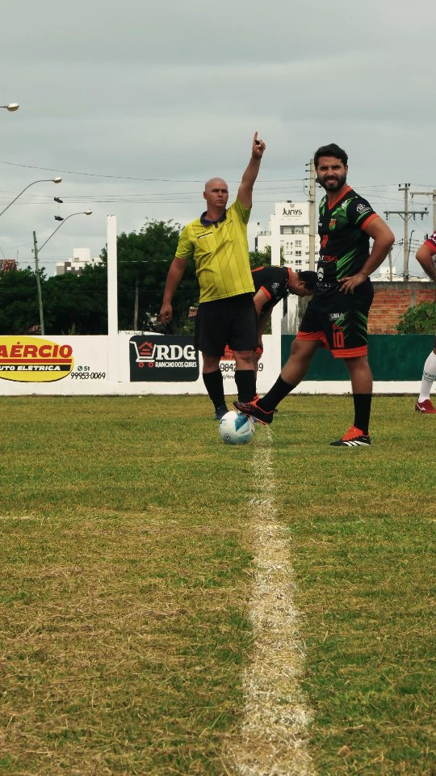
Não foi só futebol solidário
Não foi só futebol solidário. Foi mochila cheia, estojo completo e mais dignidade para começar o ano letivo com o que cada criança merece
Não foi só futebol solidário. Foi mochila cheia, estojo completo e mais dignidade para começar o ano letivo com o que cada criança merece.
Ler materia completa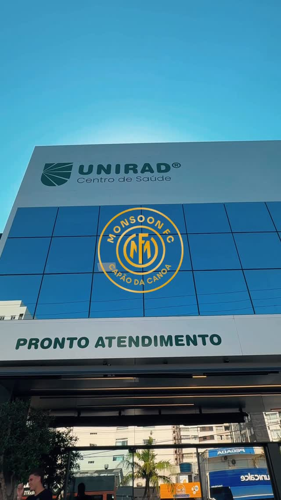
Em parceria com a UNIRAD, nosso atleta Hannyel realizou exame...
Em parceria com a UNIRAD, nosso atleta Hannyel realizou exame pós-lesão, etapa fundamental para um retorno seguro e no tempo certo aos gramados
Aqui no tubarão do litoral, cada detalhe importa, da prevenção à performance, ainda mais quando contamos com parceiros como a UNIRAD. Seguimos juntos, com responsabilidade e compromisso com a saúde d...
Ler materia completa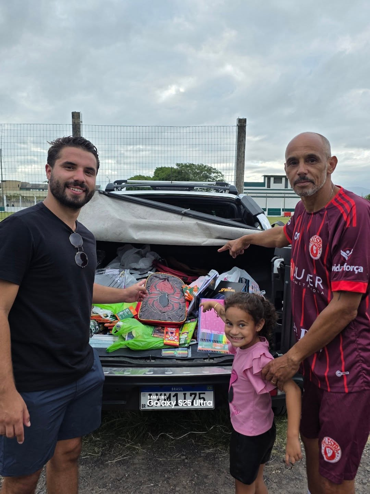
Objetivo alcançado
Gratidão a todos que fizeram isso possível, juntos somos mais fortes sempre
Gratidão a todos que fizeram isso possível, juntos somos mais fortes sempre! @aguias_deprata @avenidafutebolclube @veteranouniaofut @renegadosss_fc @baile_de_monique_futsal @projetoakindu @atle...
Ler materia completa
Empate
Agora a decisão será em casa
Agora a decisão será em casa. O tubarão do litoral vai decidir diante da sua torcida, no próximo sábado, dia 07/03, às 16h no Est. Passo dAreia.
Ler materia completa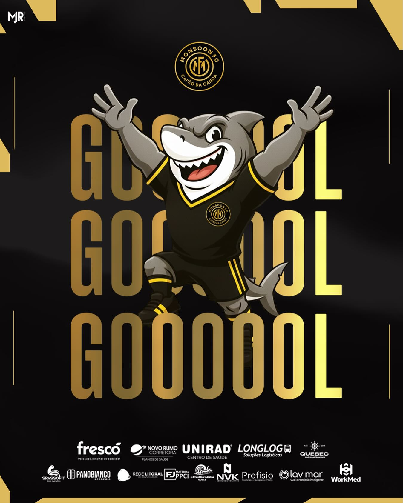
Gooooolll na Baixada
Gooooolll na Baixada
@95fabinho abre o placar Inter SM 0 Monsoon FC 1 Vamos !
Ler materia completa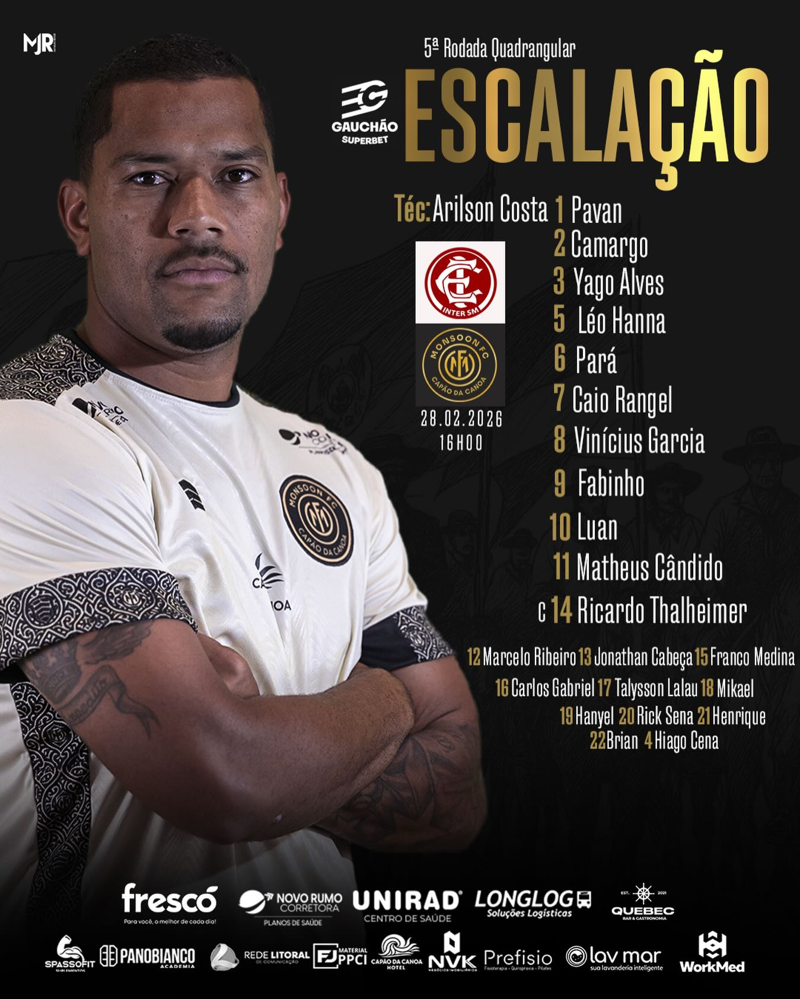
Tubarão do Litoral escalado pelo técnico Arilson Costa, para o jogo...
Tubarão do Litoral escalado pelo técnico Arilson Costa, para o jogo que acontece hoje as 16h contra o Inter SM
Monsoon FC pronto para o desafio de hoje. Acompanhe ao vivo pelo canal da GZH no youtube a partir das 16h.
Ler materia completa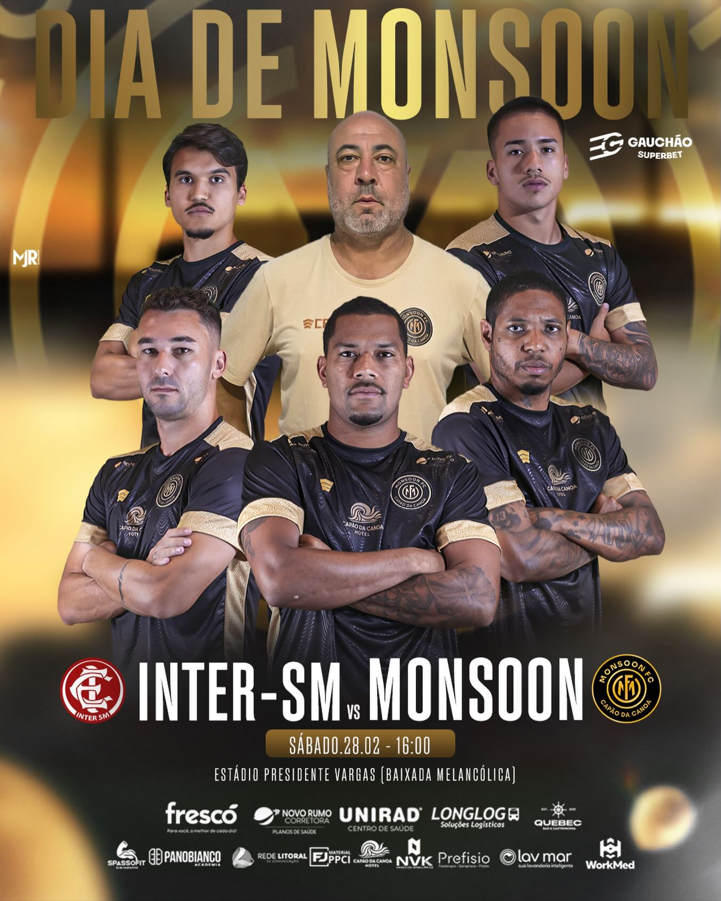
É DIA DE JOGO DO TUBARÃO DO LITORAL
É DIA DE JOGO DO TUBARÃO DO LITORAL
Internacional de Santa Maria Monsoon FC Hoje 28/02 16h Estádio Presidente Vargas Santa Maria Confronto direto, jogo grande e cada detalhe pode decidir. O tubarão do litoral entra em campo com foc...
Ler materia completa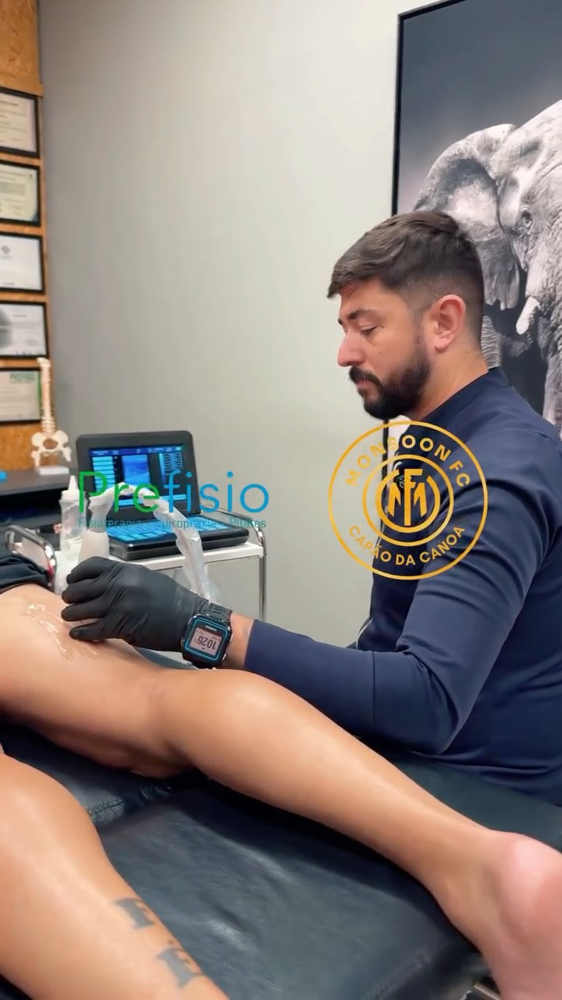
Parceria que fortalece
Parceria que fortalece
O Monsoon FC tem orgulho de caminhar ao lado da Prefisio, uma parceira que acredita no esporte, no cuidado e na performance. Dentro e fora de campo, sabemos que grandes resultados começam com prevenç...
Ler materia completaNeste sábado 28/01, o Monsoon FC vai até Santa Maria enfrentar o...
Neste sábado 28/01, o Monsoon FC vai até Santa Maria enfrentar o Inter de Santa Maria em mais uma batalha pelo Gauchão
Jogo acontece as 19h no Estádio Presidente Vargas. Vamos juntos!
Ler materia completa
Monsoon FC Avenida
Diante da nossa torcida, mostramos nossa força e intensidade
Diante da nossa torcida, mostramos nossa força e intensidade. Seguimos firmes, em busca do nosso propósito. Luís Koppe Filho / EC Avenida
Ler materia completa
Monsoon FC 1 x 0
Jonathan Cabeça abre o placar no Passo dAreia
Jonathan Cabeça abre o placar no Passo dAreia. Vamos Tubarão do Litoral! Monsoon FC 1 x 0 Avenida
Ler materia completa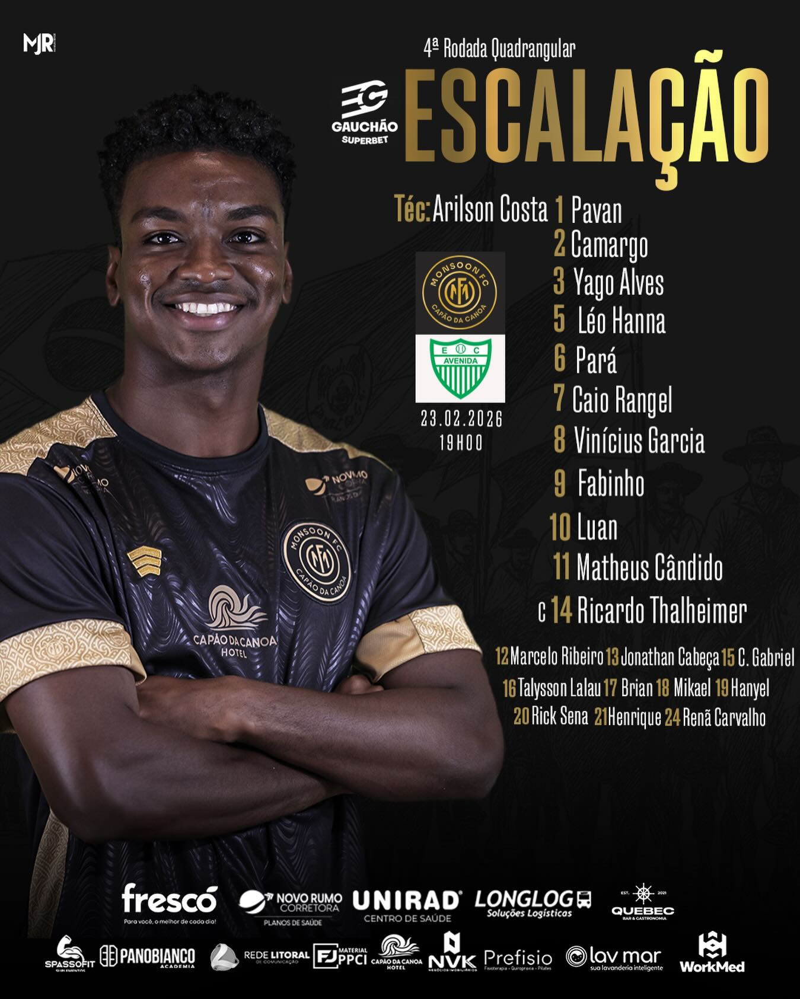
Escalação definida pelo técnico Arilson Costa para o confronto que...
Transmissão ao vivo pelo canal no youtube da GZH
Monsoon FC x Avenida Transmissão ao vivo pelo canal no youtube da GZH.
Ler materia completa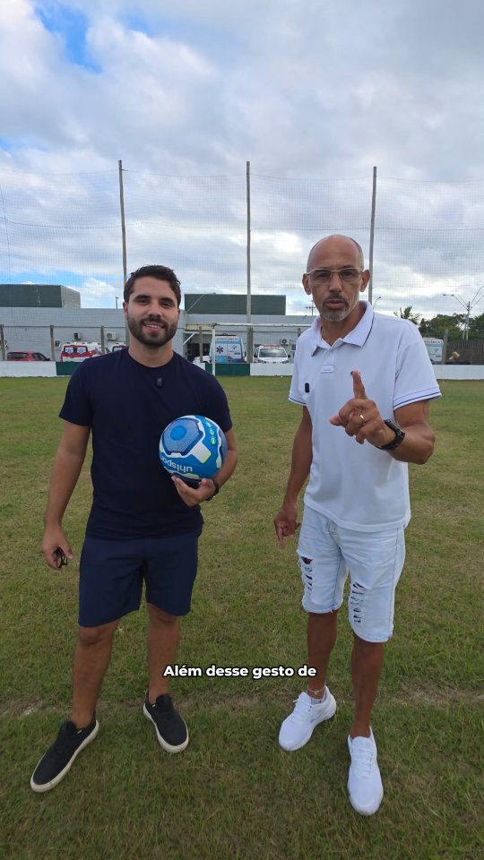
JOGO BENEFICENTE SUA AJUDA VALE MAIS QUE O PLACAR
JOGO BENEFICENTE SUA AJUDA VALE MAIS QUE O PLACAR
Amigos do vereador Dudu Amigos do vereador Tita 01 de março Campo da São Jorge, atrás da UPA Entrada: 1 material escolar Tudo será destinado para crianças que precisam começar o ano com dignidade....
Ler materia completa
DIA DE JOGO
Hoje é dia de vestir o manto, entrar em campo com raça e representar cada torcedor que acredita no nosso trabalho
Hoje é dia de vestir o manto, entrar em campo com raça e representar cada torcedor que acredita no nosso trabalho. É dia do tubarão do litoral mostrar sua força mais uma vez. Foco, entrega e comprom...
Ler materia completa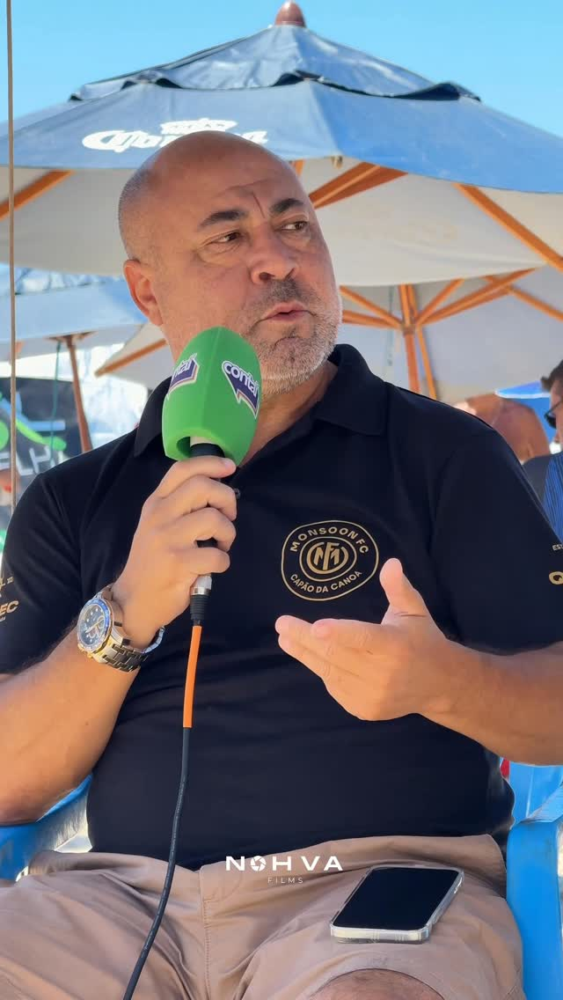
Na tarde de ontem, nosso treinador Arilson Costa, o atleta Matheus...
Seguimos construindo nossa história dentro e fora de campo
Foi um momento de troca, transparência e conexão com quem acompanha de perto o nosso trabalho. Falamos de projeto, de compromisso e daquilo que nos move todos os dias: evolução, responsabilidade e amo...
Ler materia completa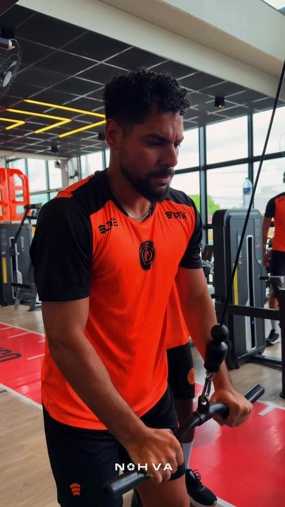
Onde se constrói força, resistência e confiança
Onde se constrói força, resistência e confiança
Na Academia @panobiancocapaocanoa, o trabalho é diário e o compromisso é com a evolução. Estrutura, dedicação e parceria que fortalecem o tubarão do litoral dentro e fora de campo. Seguimos juntos, ...
Ler materia completa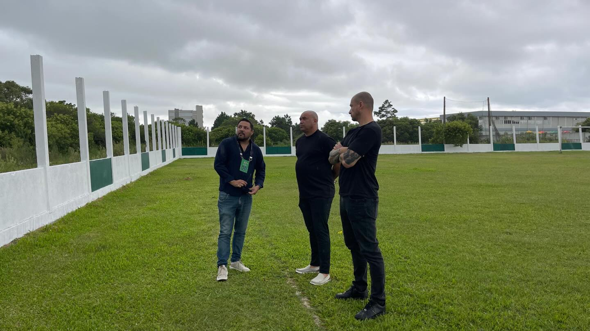
CEO Vitor Hugo e o Gerente Rafael Dias receberam a visita de Luciano,...
Estamos construindo mais do que uma estrutura esportiva. Estamos construindo pertencimento, desenvolvimento e orgulho para Capão da Canoa
O Campo do Bairro São Jorge vive um dia especial. Mais do que uma inspeção técnica, essa vistoria simboliza um passo concreto na construção de um novo capítulo para o esporte no Litoral Gaúcho. É a de...
Ler materia completa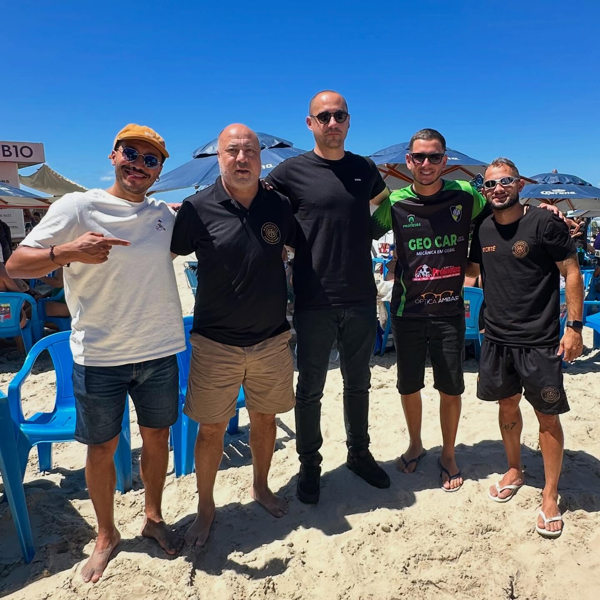
É VERÃO, É PÉ NA AREIA! Bom demais receber o time do @monsoon_fc_ hoje
É VERÃO, É PÉ NA AREIA! Bom demais receber o time do @monsoon_fc_ hoje! É mas um time profissional fazendo história no Litoral
Perdeu o programa? Pega o link na bio! Siga as empresas que apoiam o futebol no Litoral: @casamelissapizzaria @pena_delsurimbe @soft.xangrila @petclinicapegrande @_bambisports @super_chaves_
Ler materia completa
Monsoon FC encara o Avenida pela 4ª Rodada do Quadrangular no Campeonato Gaúcho
Monsoon FC encara o Avenida pela 4ª Rodada do Quadrangular no Campeonato Gaúcho
23/02/2026 19h Estádio Francisco Novelletto Torcida, vamos fazer barulho!
Ler materia completa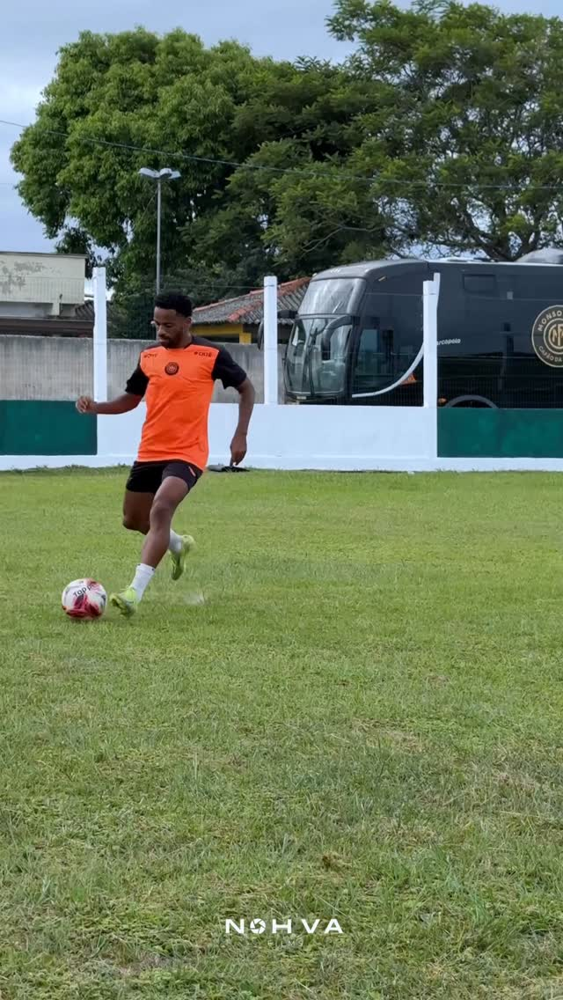
Treino intenso, foco total e cada detalhe sendo ajustado para o duelo...
Treino intenso, foco total e cada detalhe sendo ajustado para o duelo contra o Avenida
O tubarão do litoral está preparado. É compromisso, é concentração, é Monsoon FC em campo.
Ler materia completaConexão Brasil/Peru
Direto do litoral gaúcho, Hannyel e Franco Medina aceitaram o Desafio do Gauchão Raiz da RBS TV. Oportunidade que gerou muita resenha entre os hermanos do @monsoon_fc_
Ler materia completa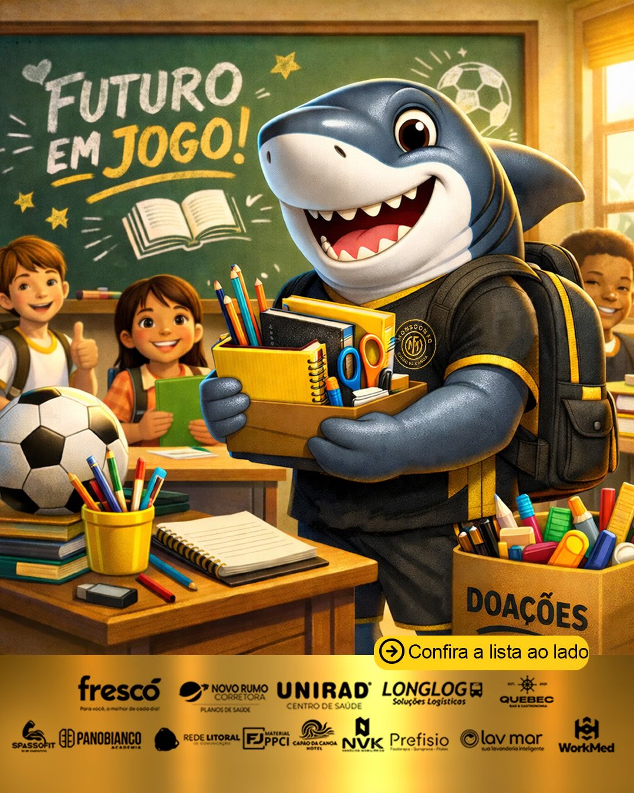
FUTURO EM JOGO
O Monsoon FC lança campanha de arrecadação de materiais escolares para crianças da rede municipal de Capão da Canoa em situação de vulnerabilidade
O Monsoon FC lança campanha de arrecadação de materiais escolares para crianças da rede municipal de Capão da Canoa em situação de vulnerabilidade. Doações nos jogos em casa: Monsoon x Avenida 23/02...
Ler materia completaFinde taí e já sabe: sábado é dia de Pé na Areia! E com esse timaço
É mais um clube profissional representando o Litoral entre os grandes do Gauchão
É mais um clube profissional representando o Litoral entre os grandes do Gauchão! É ao vivo sábado 12h direto do @bardotators! Siga as empresas que apoiam o esporte em nosso Litoral: @casamelissapi...
Ler materia completa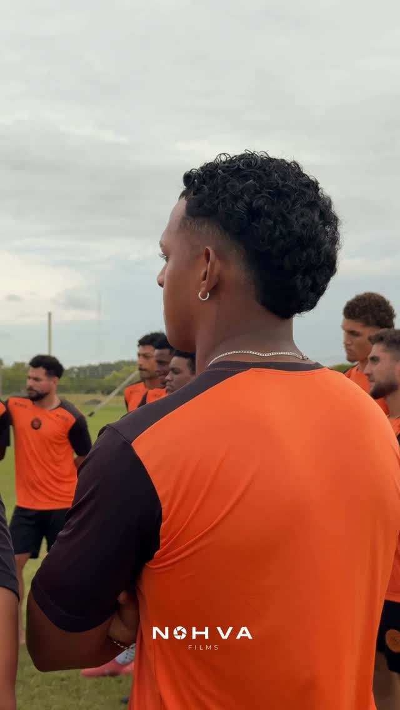
Carnaval também é tempo de compromisso
Carnaval também é tempo de compromisso
Respeitamos a folia, mas escolhemos seguir firmes no nosso propósito. Treino, foco e evolução. Sempre
Ler materia completa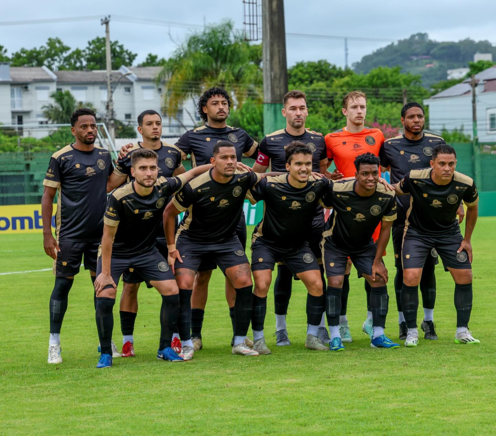
Empate fora de casa tem peso
Empate fora de casa tem peso
Lutamos do primeiro ao último minuto, competimos em alto nível e mostramos mais uma vez a força do tubarão do litoral mesmo longe da nossa torcida. Seguimos somando, seguimos evoluindo e seguimos jun...
Ler materia completa
Monsoon FC 1 x 1
Pênalti convertido por ele @95fabinho
Avenida 1x1 Monsoon FC Vamos tubarão
Ler materia completa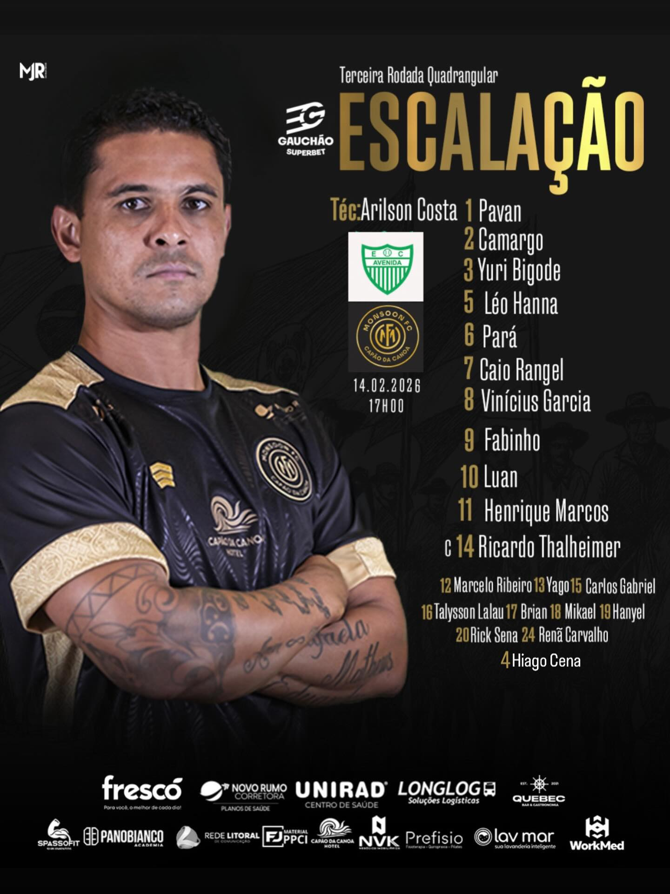
Escalação definida pelo técnico Arilson Costa para o confronto que...
Escalação definida pelo técnico Arilson Costa para o confronto que acontecerá logo mais às 17:00 horas no Estádio dos Eucaliptos
Avenida x Monsoon FC Transmissão ao vivo pelo canal no youtube da GZH.
Ler materia completa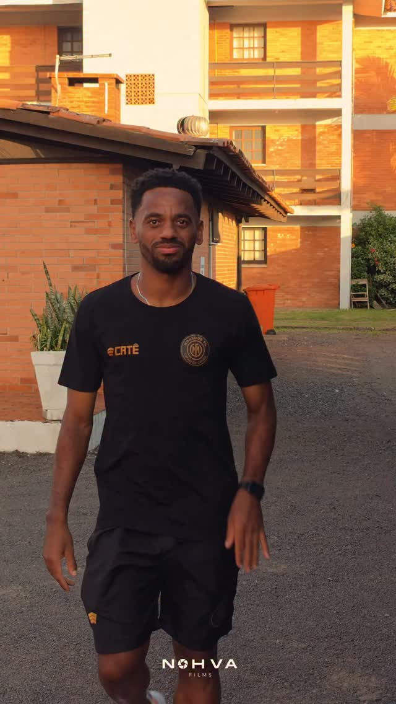
É hora de pegar a estrada
É hora de pegar a estrada
O apoio no embarque rumo a Santa Cruz fez a diferença. Vocês nos fortalecem antes mesmo da bola rolar. Seguimos juntos pelo litoral e pelo Monsoon FC.
Ler materia completa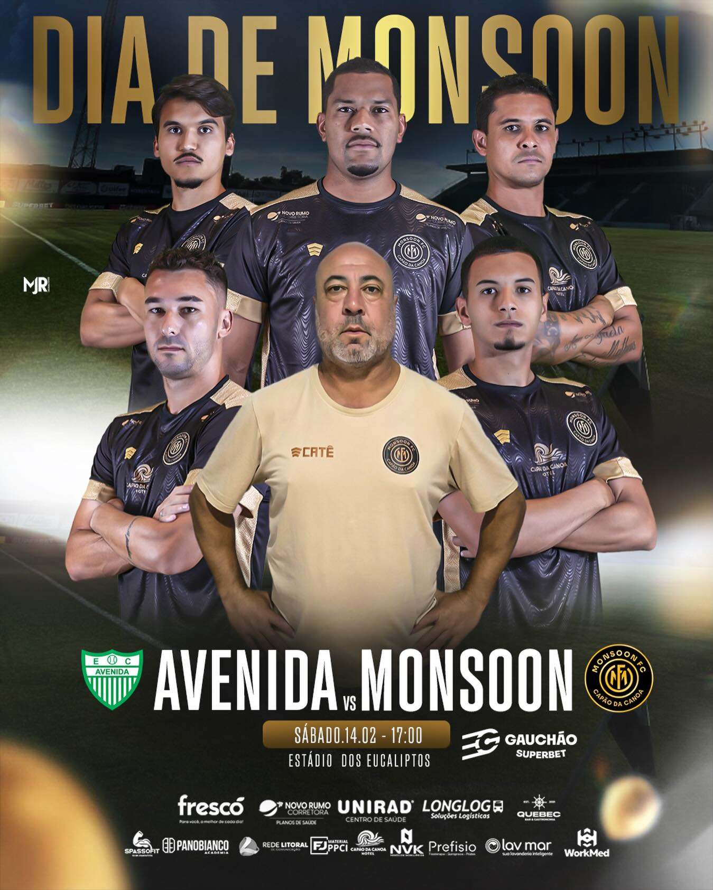
HOJE É DIA DO TUBARÃO DO LITORAL
HOJE É DIA DO TUBARÃO DO LITORAL
Fora de casa, mas com a mesma confiança. Olho no olho. Personalidade. Convicção. Contra o Esporte Clube Avenida, entramos em campo sabendo quem somos. Somos Monsoon FC. Somos raça, coragem. Somos ...
Ler materia completa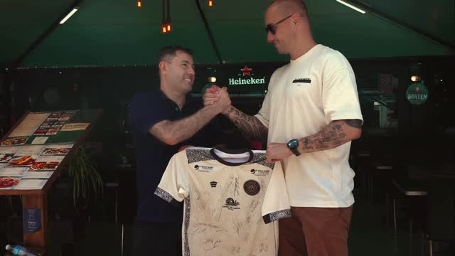
Nosso agradecimento especial ao nosso parceiro Quebec Bar e...
Momentos como esse fortalecem o grupo, renovam as energias e mostram que estamos cercados de parceiros que acreditam no nosso projeto
Momentos como esse fortalecem o grupo, renovam as energias e mostram que estamos cercados de parceiros que acreditam no nosso projeto. Seguimos juntos, dentro e fora das quatro linhas!
Ler materia completa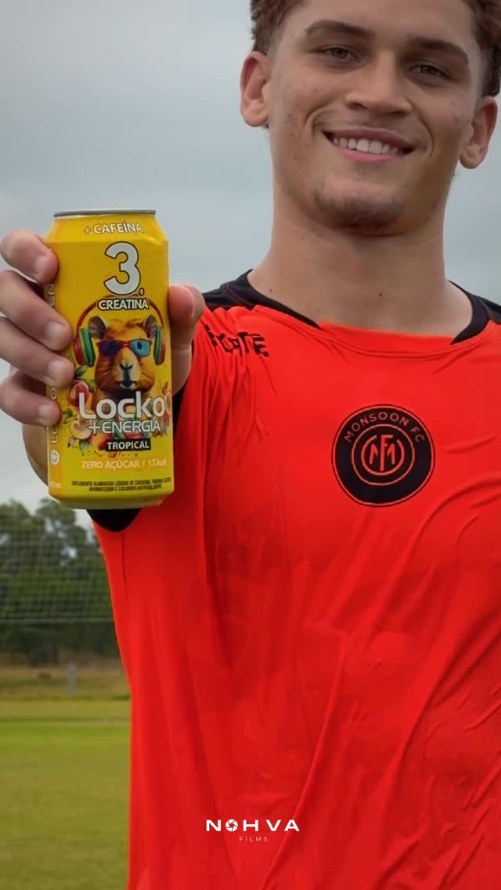
Não é só energia
É performance. É potência. É preparação
É performance. É potência. É preparação. Grandes jogos exigem grandes parceiros e agora o tubarão do litoral conta com a energia da LOCKO para impulsionar cada desafio dentro e fora de campo. Com fó...
Ler materia completaAvenida Monsoon FC
Estádio dos Eucaliptos
17h Estádio dos Eucaliptos É trabalho, é entrega, é o tubarão do litoral lutando até o fim. Vamos juntos.
Ler materia completaPor trás de cada jogo, existe muito trabalho
Por trás de cada jogo, existe muito trabalho
E a Lavmar Lavanderia faz parte dessa engrenagem que mantém nosso elenco sempre pronto! Obrigado Lav mar por estar ao lado do tubarão do litoral. Parceria que fortalece o clube dentro e fora de camp...
Ler materia completa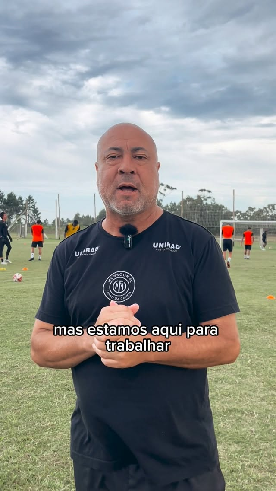
Palavra, liderança e compromisso do professor Arilson com o nosso grupo
Palavra, liderança e compromisso do professor Arilson com o nosso grupo
Aqui é tubarão do litoral. Aqui é trabalho todos os dias.
Ler materia completa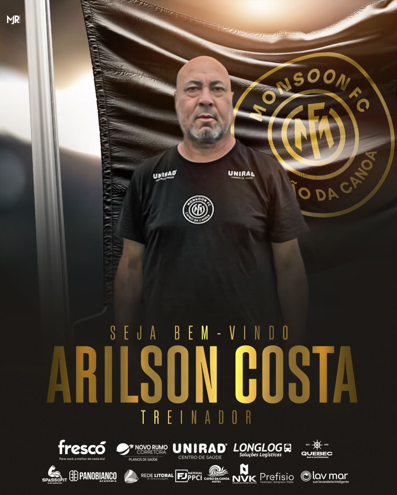
NOVO COMANDANTE NO MONSOON FC
NOVO COMANDANTE NO MONSOON FC
O Monsoon Futebol Clube dá as boas-vindas a Arílson Costa, novo treinador do Tubarão do Litoral. O multicampeão fez história, com o Grêmio, conquistando títulos como a Copa Libertadores da América e ...
Ler materia completa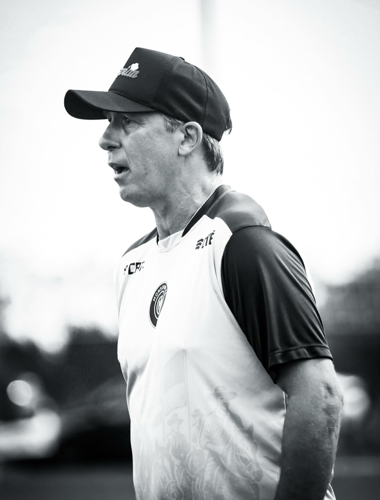
NOTA OFICIAL
O Monsoon Futebol Clube informa que, em comum acordo, o treinador Paulo Baier não seguirá no comando técnico da equipe, a partir desta data (09)
O Monsoon Futebol Clube informa que, em comum acordo, o treinador Paulo Baier não seguirá no comando técnico da equipe, a partir desta data (09). A decisão foi tomada de forma serena e respeitosa, co...
Ler materia completa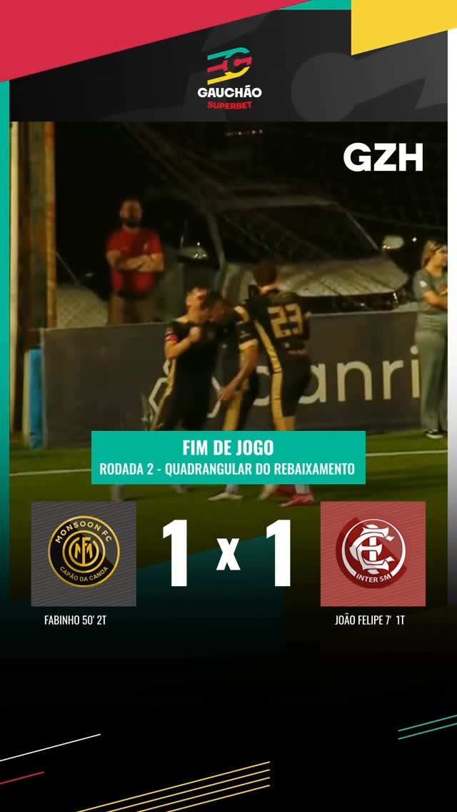
SÓ ACABA QUANDO TERMINA
SÓ ACABA QUANDO TERMINA
Quem nunca ouviu esse ditado? O Monsoon seguiu à risca diante do Internacional-SM!
Ler materia completa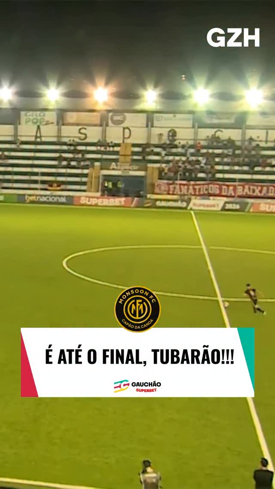
GOL AOS 50 DO 2 TEMPO
GOL AOS 50 DO 2 TEMPO
O Monsoon batalha até o final e buscou o empate histórico!
Ler materia completa
Monsoon FC 1 x 1
Fabinho deixa tudo igual, 1x1 MONSOON FC INTER SM
Fabinho deixa tudo igual, 1x1 MONSOON FC INTER SM
Ler materia completa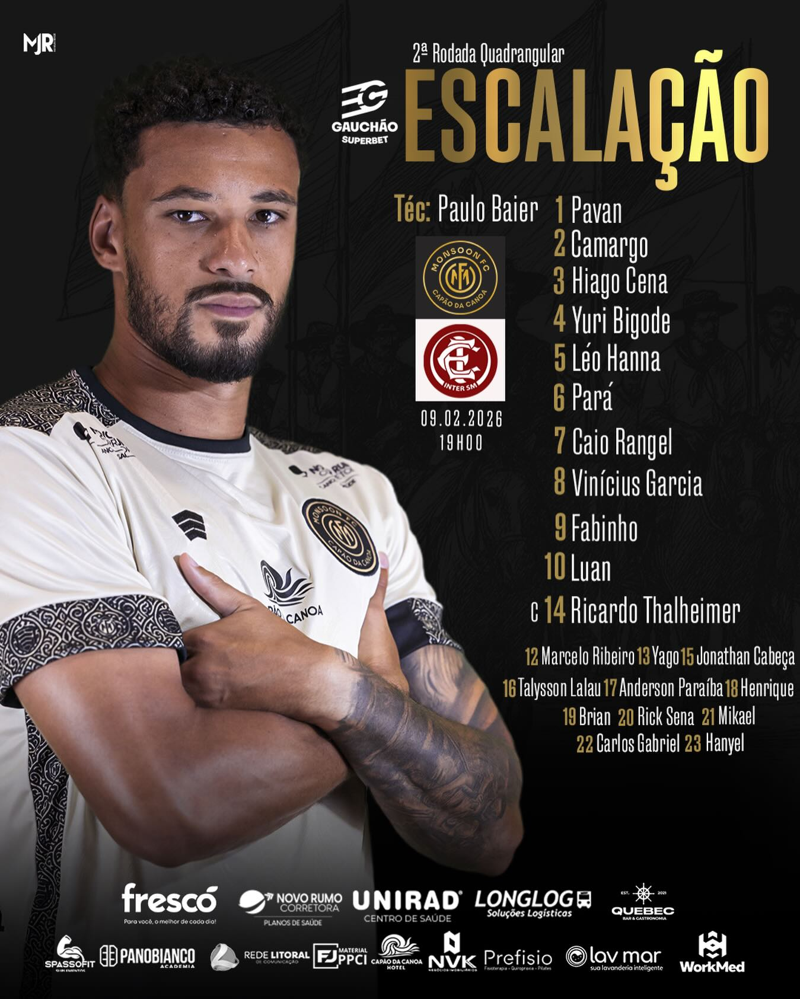
Escalação definida pelo treinador Paulo Baier
Escalação definida pelo treinador Paulo Baier
Entramos em campo representando o litoral, com raça, entrega e respeito à nossa camisa. É dia de lutar até o fim. monsoonfc
Ler materia completa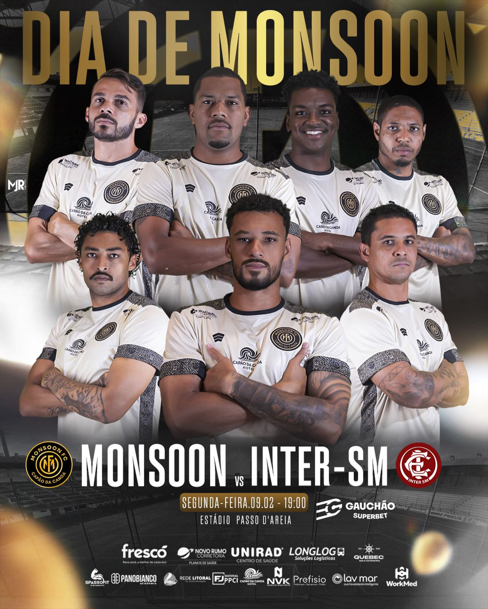
Hoje é dia de jogo
É dia do tubarão do litoral
É dia do tubarão do litoral Hoje às 19h, enfrentamos o Inter SM no Estádio Francisco Novelletto Neto. Pontos de venda de ingressos: Online em: https://eleventickets.com/monsoonfc/monsoon-fc-x-inter...
Ler materia completaAmanhã entramos em campo para mais um desafio decisivo
Amanhã entramos em campo para mais um desafio decisivo
Monsoon FC x Inter de Santa Maria, às 19h. Estádio Passo DAreia, Porto Alegre É trabalho, é entrega, é o tubarão do litoral lutando até o fim. Vamos juntos.
Ler materia completaLogo mais às 16h, teremos a continuação do jogo entre Guarany e...
Logo mais às 16h, teremos a continuação do jogo entre Guarany e Monsoon FC, no Est. Estrela DÁlva
Transmissão pelo canal do youtube da GZH! Vamos tubarão
Ler materia completa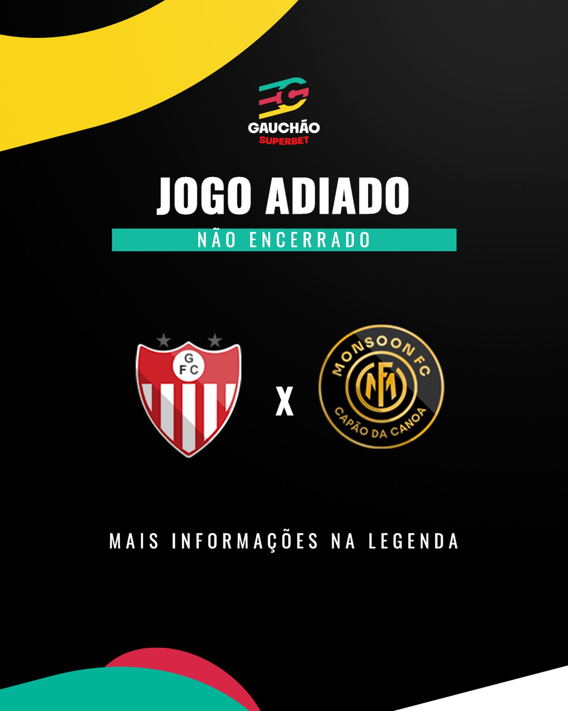
COMUNICADO IMPORTANTE
A etapa final entre Guarany x Monsoon será realizada amanhã (06/02)
A etapa final entre Guarany x Monsoon será realizada amanhã (06/02)! Estrela DAlva - Bagé Portões abertos 16h
Ler materia completa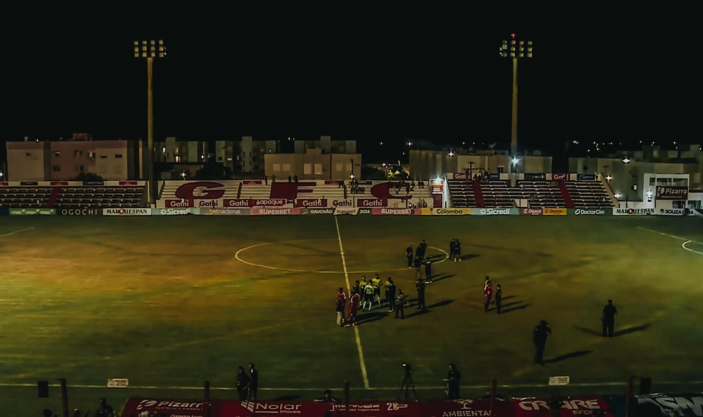
NOTA OFICIAL MONSOON FC
imagens da transmissão da GZH
O Monsoon Futebol Clube informa que a partida diante do Guarany Futebol Clube, realizada na noite desta quinta-feira (05), no Estádio Estrela DAlva, em Bagé, foi suspensa em razão de problemas na ilum...
Ler materia completa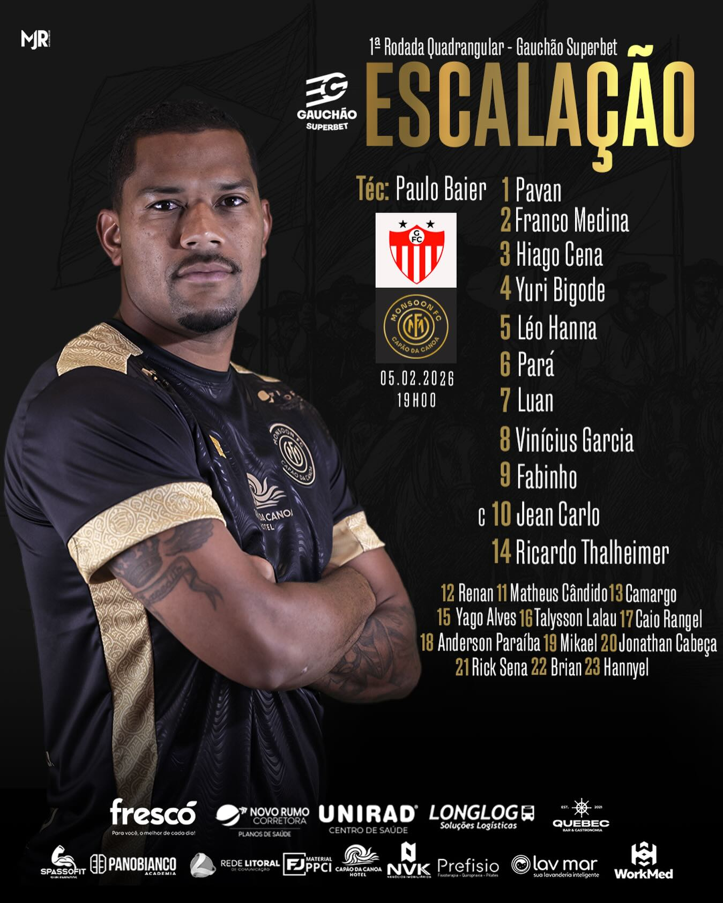
Tubarão do Litoral escalado para o confronto em Bagé, logo mais as 19h
Tubarão do Litoral escalado para o confronto em Bagé, logo mais as 19h
Transmissão ai vivo pelo cabal do youtube do GZH.
Ler materia completa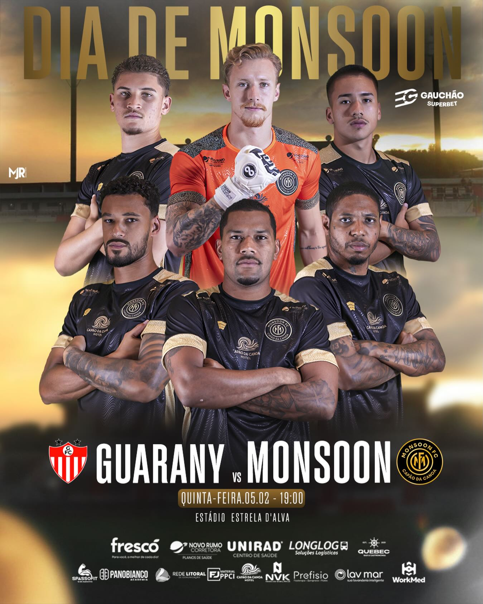
Hoje as 19h, enfrentamos o Guarany no Estádio Estrela DAlva em Bagé
Hoje as 19h, enfrentamos o Guarany no Estádio Estrela DAlva em Bagé
Jogo válido pela primeira rodada do quadrangular. Vamos tubarão
Ler materia completa05/02, às 19h, Guarany de Bagé x Monsoon FC, pela primeira rodada do...
05/02, às 19h, Guarany de Bagé x Monsoon FC, pela primeira rodada do quadrangular
O tubarão do litoral entra em campo com foco, união e coragem pra buscar o resultado. Juntos. Até o último minuto. Aqui é Monsoon FC, aqui é tradição, raça e compromisso!
Ler materia completa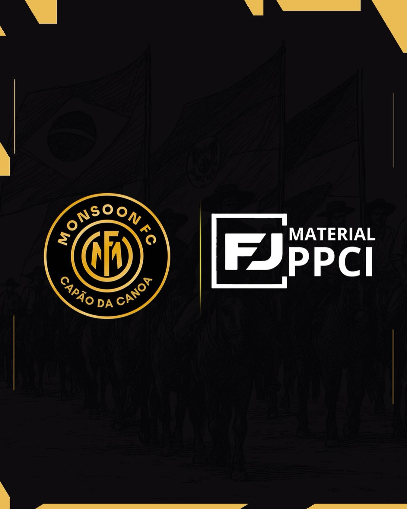
Grandes projetos se constroem com parceiros sólidos
Grandes projetos se constroem com parceiros sólidos
Obrigado, FJ Material PPCI, por caminhar junto com o tubarão do litoral.
Ler materia completa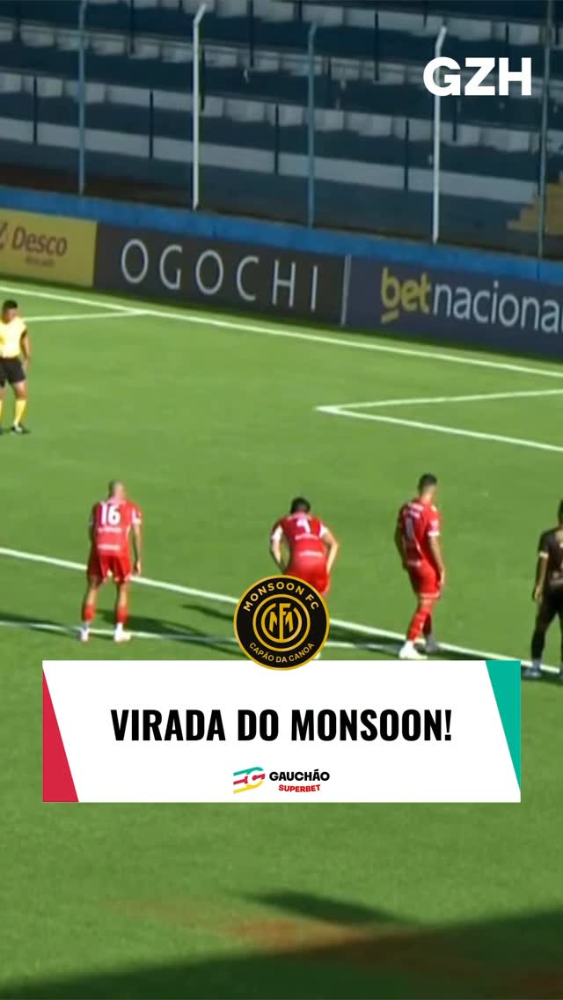
O TUBARÃO VIROU
É de pênalti que o Monsoon comemora! O jogo pegou fogo
É de pênalti que o Monsoon comemora! O jogo pegou fogo!
Ler materia completa
Monsoon FC 2 x 1
Pênalti convertido pelo @95fabinho
Pênalti convertido pelo @95fabinho!!! Vamoss tubarãoo
Ler materia completa
Goooolll do empate veio do @95fabinho
Goooolll do empate veio do @95fabinho
Vamoss tubarão
Ler materia completa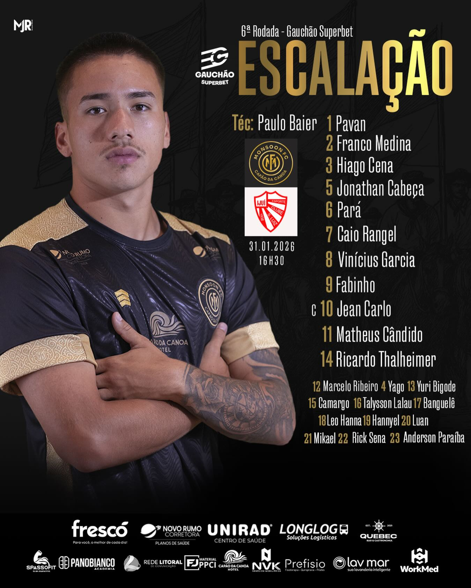
Tubarão do Litoral escalado para a partida de hoje
Tubarão do Litoral escalado para a partida de hoje
MONSOON FC X SÃO LUIZ, às 16:30.
Ler materia completa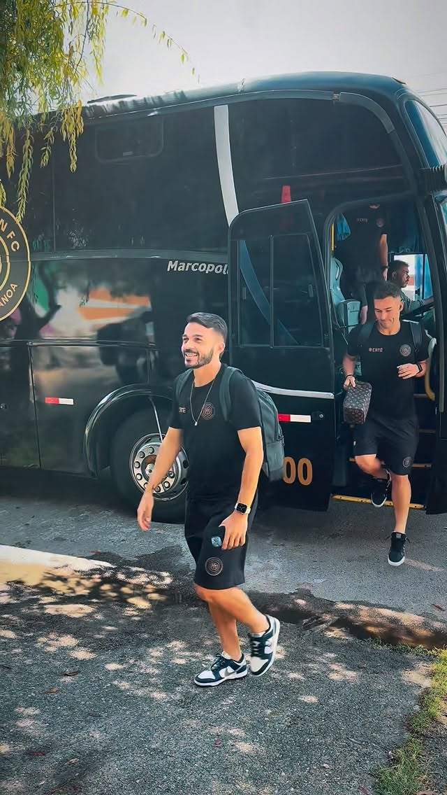
Nosso elenco já está no Passo dAreia
Nosso elenco já está no Passo dAreia
Hoje é dia de classificação. É dia do tubarão do litoral.
Ler materia completa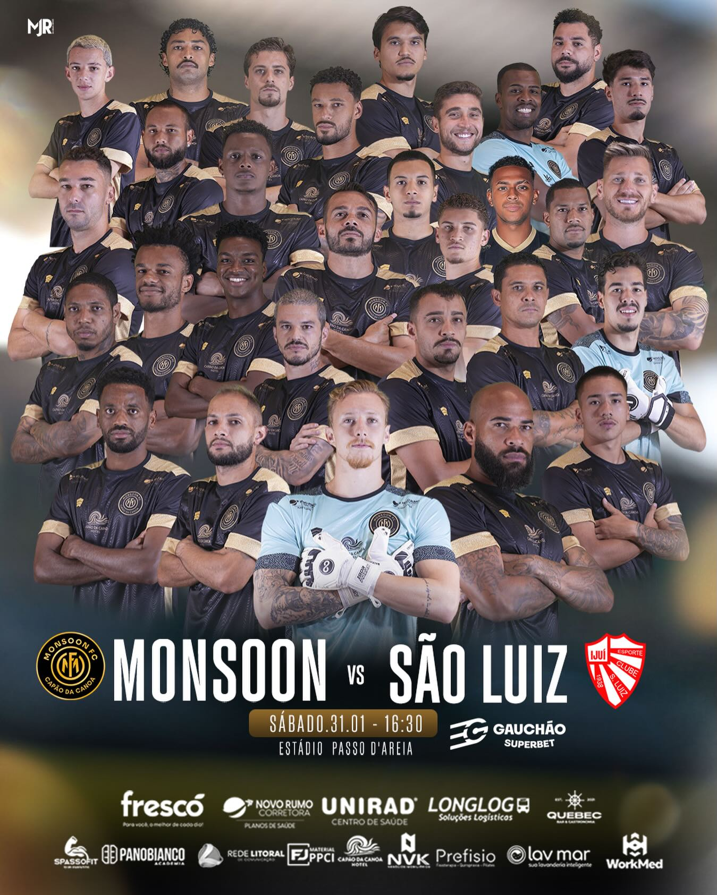
Hoje é Monsoon x São Luiz valendo a classificação
Hoje é Monsoon x São Luiz valendo a classificação
Hoje é lutar, acreditar e fazer história. O litoral joga junto. Às 16h30, no Estádio Francisco Novelletto Neto. Transmissão Canal do youtube da GZH.
Ler materia completaEntramos em campo por uma causa maior
Mais do que futebol, acreditamos no nosso papel social. O tubarão do litoral entra em campo pela empatia, pela união e pela nossa gente
Neste sábado (31/01), vamos destinar 30 da arrecadação de bilheteria do nosso jogo contra o São Luiz de Ijuí para apoiar a luta do menino Lorenzo, de Capão da Canoa, mobilizada pelo perfil @juntoscoml...
Ler materia completaIsso aqui não é só um reels
Isso aqui não é só um reels
É um recorte do que está sendo construído. As crianças da Escolinha de Futebol do @projetoakindu recebendo os jogadores do @monsoon_fc_. Teve conversa, teve bola nova, teve riso fácil e aquele brilho...
Ler materia completaNesta semana recebemos a visita da @rbstv momento em que nossos...
Nesta semana recebemos a visita da @rbstv momento em que nossos atletas e comissão deram voz ao MONSOON FC CAPÃO DA CANOA
O tubarão do litoral segue crescendo, dentro e fora de campo. Monsoon FC. Raça e identidade. RBS TV
Ler materia completaAqui o jogo vai além do apito final
Aqui o jogo vai além do apito final
O que arrecadamos juntos nas arquibancadas virou cuidado, apoio e esperança. Hoje foi dia de visita, de abraço e de entrega ao Projeto Akindu porque quando o tubarão do litoral entra em campo, é pra ...
Ler materia completaQuando a arquibancada empurra, o tubarão do litoral cresce
Quando a arquibancada empurra, o tubarão do litoral cresce
É decisão. É classificação. É o litoral inteiro jogando junto. Te esperamos no estádio. Vem fazer a diferença.
Ler materia completaDia de jogo, intensidade em campo e identidade no uniforme
Dia de jogo, intensidade em campo e identidade no uniforme
Monsoon em movimento, vestindo CATÊ.
Ler materia completaÉ decisão. É agora
O tubarão do litoral entra em campo por algo que vai além dos 90 minutos:
O tubarão do litoral entra em campo por algo que vai além dos 90 minutos: vale a classificação. O Monsoon FC precisa do apoio da sua torcida. Cada voz na arquibancada, cada incentivo, cada aplauso ...
Ler materia completaNão é apenas mais um jogo
Não é apenas mais um jogo
É o nosso jogo! VALENDO A CLASSIFICAÇÃO, vamos TUBARÃO DO LITORAL
Ler materia completaEscalação confirmada pelo Técnico Paulo Baier para mais um desafio no Gauchão
Escalação confirmada pelo Técnico Paulo Baier para mais um desafio no Gauchão
18h Alfredo Jaconi Juntos, do início ao fim.
Ler materia completaAmanhã entramos em campo pela 5ª rodada do Gauchão 2026 para...
Amanhã entramos em campo pela 5ª rodada do Gauchão 2026 para enfrentar o Juventude
Juventude Monsoon FC Alfredo Jaconi 18h Aqui é Monsoon FC. Aqui é o tubarão do litoral.
Ler materia completaMonsoon FC 2 x 1
Vitória gigante fora de casa
Entrevista do nosso atleta @vinisouzagarcia e do nosso treinador @paulocbaier após vitória heróica do Monsoon FC. Vencemos o São José por 2 a 1 no Passo DAreia, com muita entrega, competitividade e a...
Ler materia completaMonsoon FC 2 x 1
Com garra e coração vencenos o São José por 2×1
Com garra e coração vencenos o São José por 2×1! Do primeiro ao último minuto, mostramos raça, união e aquele espírito de tubarão que nunca desiste! Dois gols que valem três pontos importantes na no...
Ler materia completaOs gols da 1ª vitória
Os gols da 1ª vitória
O @monsoon desencantou no !
Ler materia completaVITÓRIA NA EMONSOON
O @monsoon foi aguerrido fora de casa, lutou até o fim e conquistou a primeira vitória no
O @monsoon foi aguerrido fora de casa, lutou até o fim e conquistou a primeira vitória no !
Ler materia completa
Gooooollll Do Tubarão do Litoral
Gooooollll Do Tubarão do Litoral
Vinicius Garcia, marca o 2º gol, tubarão na frente novamente! Vamos Monsoon FC
Ler materia completa"Não existe gol feio, feio é não fazer gol.", já dizia o poeta
"Não existe gol feio, feio é não fazer gol.", já dizia o poeta
Jean Carlo aproveitou a falha do goleirão e abriu o placar para o @monsoon_fc_!
Ler materia completa
GOOOOOLLLLL DO Tubarão do Litoral
GOOOOOLLLLL DO Tubarão do Litoral
Jean Carlo, no inicio do 2º tempo. Vamos Monsoon FC Aqui é raça, tradição e compromisso!
Ler materia completaESCALAÇÃO DEFINIDA
4ª RODADA GAUCHÃO 2026
4ª RODADA GAUCHÃO 2026 O tubarão do litoral entra em campo nesta quinta-feira para encarar o São José, em um confronto válido pela 4ª rodada do Gauchão 2026. Quinta-feira 22/01 21h30 Estádio Franc...
Ler materia completaO Monsoon FC entra em campo contra o São José pela 4ª rodada do...
O Monsoon FC entra em campo contra o São José pela 4ª rodada do Campeonato Gaúcho 2026
Local: Estádio Francisco Novelletto Neto (Passo DAreia), Porto Alegre. Entrada da torcida do Monsoon FC será pela AVENIDA RIO SÃO GONÇALO. Data: 22 de janeiro Horário: 21h30 Vamos juntos apoiar o ...
Ler materia completaAmanhã é noite de jogo
Amanhã é noite de jogo
Entre São José e Monsoon FC, mais um desafio importante na elite gaúcha. O Monsoon entra em campo com confiança no trabalho que vem sendo feito. Jogo a jogo, seguimos construindo nosso caminho. Aqu...
Ler materia completaESCALAÇÃO DEFINIDA
3ª RODADA GAUCHÃO 2026
3ª RODADA GAUCHÃO 2026 O tubarão do litoral entra em campo neste domingo para encarar o Avenida, em confronto válido pela 3ª rodada do Gauchão 2026. Domingo 18/01 19h Estádio Francisco Novelletto ...
Ler materia completa
O tubarão do litoral desembarca no Passo da Areia para a 3ª rodada do Gauchão
O tubarão do litoral desembarca no Passo da Areia para a 3ª rodada do Gauchão
O tubarão do litoral desembarca no Passo da Areia para a 3ª rodada do Gauchão.
Ler materia completaINGRESSO SOLIDÁRIO MONSOON FC x AVENIDA
Para validar seu ingresso solidário, o passo a passo é simples:
Para validar seu ingresso solidário, o passo a passo é simples: 1 Acesse o site oficial: https://eleventickets.com ou acesse o link em nossa bio. 2 Acesse sua conta ou cadastre-se 3Retire e valide ...
Ler materia completaMais do que futebol, responsabilidade social
Mais do que futebol, responsabilidade social
O Monsoon FC promove ingresso solidário em parceria com a Akindu: 1 brinquedo 1 alimento garantem o acesso ao jogo. Nosso compromisso vai além das quatro linhas é com a sociedade. Porque ser Monsoon...
Ler materia completaDomingo é dia de tubarão do Litoral
Domingo é dia de tubarão do Litoral
Monsoon FC VS Avenida neste Domingo 18/01, às 19h, no Estádio Francisco Novelletto Neto (Porto Alegre).
Ler materia completaDentro de campo, lutamos por vitórias. Fora dele, lutamos pela vida
Dentro de campo, lutamos por vitórias. Fora dele, lutamos pela vida
Hoje, o Monsoon FC abre espaço para um depoimento de quem vive essa batalha de perto. A esposa do nosso atleta @para.erinaldo compartilha uma mensagem de força, esperança e conscientização sobre o cân...
Ler materia completaNOTA DE SOLIDARIEDADE
Que Deus conforte o coração de todos, traga força às famílias e plena recuperação aos que seguem em tratamento
O Monsoon FC Capão da Canoa manifesta sua mais profunda solidariedade ao Águia de Marabá, aos atletas, comissão técnica, dirigentes, familiares e a todos os envolvidos no grave acidente ocorrido duran...
Ler materia completaPrimeiro jogo em casa. Primeiro encontro com nossa torcida
Primeiro jogo em casa. Primeiro encontro com nossa torcida
Arquibancada viva e o tubarão do litoral sentindo o apoio da sua torcida. Obrigado por fazerem história conosco!
Ler materia completaO futebol também é solidariedade
O futebol também é solidariedade
Hoje entramos em campo vestindo camisa rosa em apoio à conscientização e à luta contra o câncer de mama. A ação tem um significado ainda mais forte para o nosso elenco: a mãe do volante Anderson Para...
Ler materia completa
O Tubarão do Litoral está pronto para entrar em campo
O Tubarão do Litoral está pronto para entrar em campo
Escalação definida pelo técnico Paulo Baier para o confronto contra o Internacional, às 19h, no Estádio Francisco Novelletto Neto.
Ler materia completa
Venha apoiar o tubarão do litoral
Venha apoiar o tubarão do litoral
Venha apoiar o tubarão do litoral!
Ler materia completaHorário de saída dos ônibus que levarão nossos torcedores rumo a...
Horário de saída dos ônibus que levarão nossos torcedores rumo a Porto Alegre para apoiar o Tubarão do Litoral, no duelo contra o Internacional
Confira o horário, organize-se e venha fazer parte dessa jornada. Juntos, mais fortes dentro e fora de campo!
Ler materia completaAMANHÃ É DIA DE JOGO
AMANHÃ É DIA DE JOGO
Falta pouco para mais um grande desafio no Gauchão, e cada detalhe importa. Monsoon FC x Internacional Amanhã 19h Porto Alegre O tubarão do litoral já está no clima. Amanhã é dia de competir com...
Ler materia completaTRANSPORTE GRATUITO VAGAS LIMITADAS
TRANSPORTE GRATUITO VAGAS LIMITADAS
O tubarão do litoral vai pra cima em mais um grande desafio! Garanta seu transporte gratuito para o jogão entre Monsoon FC x Internacional. ATENÇÃO: Vagas limitadas Inscrição exclusiva pelo link n...
Ler materia completaHoje é dia de reconhecer quem vive o futebol com responsabilidade,...
Hoje é dia de reconhecer quem vive o futebol com responsabilidade, estudo, liderança e paixão
Parabéns a todos os treinadores, que diariamente formam atletas, constroem equipes e inspiram pessoas dentro e fora de campo. Em especial, nossa homenagem ao professor Paulo Baier, que com experiênci...
Ler materia completaCuidar da saúde é um compromisso que vai muito além da obrigação
Cuidar da saúde é um compromisso que vai muito além da obrigação. É sobre responsabilidade, prevenção e respeito com cada pessoa atendida
Na Work Med, cada processo é pensado para oferecer segurança, organização e um acompanhamento profissional de qualidade, garantindo tranquilidade para quem confia no nosso trabalho. Parcerias como es...
Ler materia completaMovimentação no Monsoon FC
Movimentação no Monsoon FC
O zagueiro Yago Alves chega para reforçar o sistema defensivo do tubarão do litoral na temporada. Natural de Porto Alegre, Yago construiu sua trajetória no futebol brasileiro e também soma experiênci...
Ler materia completaMonsoon FC 1 x 1
Primeiro jogo fora de casa, primeiro ponto somado
O tubarão do litoral batalhou e garantiu o 1x1. Comenta se tu acredita nesse time!
Ler materia completaMonsoon FC 1 x 1
Leia a matéria completa em nosso site
Leia a matéria completa em nosso site.
Ler materia completaFOI NA EMOÇÃO
Vamos rever os gols de @guaranyrs e @monsoon_fc_
Vamos rever os gols de @guaranyrs e @monsoon_fc_?
Ler materia completa
É GOOOOOL DO TUBARÃO DO LITORAL
É GOOOOOL DO TUBARÃO DO LITORAL
Pênalti convertido, pelo lateral Pará.
Ler materia completa
O Tubarão do Litoral está pronto para entrar em campo
O Tubarão do Litoral está pronto para entrar em campo
Escalação definida pelo técnico Paulo Baier para o primeiro jogo da temporada. Confronto fora de casa contra o Guarany de Bagé, às 19h.
Ler materia completa
A espera ACABOU
Nosso manto está disponível para venda
Nosso manto está disponível para venda! Para adquirir o seu, acesse o link em nosso perfil.
Ler materia completaDIA DE JOGO
Hoje o tubarão do litoral entra em campo
Hoje o tubarão do litoral entra em campo. 19h Estádio Estrela Dalva Bagé/RS Monsoon FC x Guarany É hora de apoiar do início ao fim. Vamos juntos, Monsoon!
Ler materia completaO Monsoon FC deixou Capão da Canoa na manhã desta sexta-feira (9)...
Leia a matéria completa em nosso site
Leia a matéria completa em nosso site.
Ler materia completaParcerias sólidas fazem projetos fortes
Parcerias sólidas fazem projetos fortes
A Longlog Soluções Logísticas acredita no nosso propósito e fortalece o caminho do tubarão do litoral, dentro e fora de campo. Seguimos juntos, com visão e responsabilidade.
Ler materia completaMovimentação no Monsoon FC
Movimentação no Monsoon FC
O meia-atacante Mikael Costa é o novo reforço do Monsoon FC para a temporada. Com características ofensivas, mobilidade e qualidade na construção das jogadas, o atleta chega para fortalecer o setor c...
Ler materia completaTORCIDA, O JOGO COMEÇA NAS ARQUIBANCADAS
TORCIDA, O JOGO COMEÇA NAS ARQUIBANCADAS
Quando o tubarão do litoral entra em campo, a força vem das cadeiras, do grito e da energia de quem acredita. Esse momento é nosso. Esse jogo é nosso. Ingressos à venda! Garanta o seu através do li...
Ler materia completaQuem acredita no trabalho, nada junto com o tubarão
Quem acredita no trabalho, nada junto com o tubarão
O Fresco Supermercados é parte fundamental da nossa caminhada, apoiando o futebol, o esporte e o desenvolvimento da nossa região. Juntos, seguimos construindo algo maior dentro e fora de campo.
Ler materia completaCONTAGEM REGRESSIVA INICIADA
No dia 10, o tubarão do litoral entra em campo para o primeiro desafio do Gauchão 2026
Faltam 3 dias. No dia 10, o tubarão do litoral entra em campo para o primeiro desafio do Gauchão 2026. A preparação foi intensa, o foco é total. A vontade é gigante. Aqui é Monsoon FC. Aqui é tra...
Ler materia completaParceria que faz a diferença
Parceria que faz a diferença
A Novo Rumo Corretora é parte fundamental da nossa caminhada, apoiando o futebol, o esporte e o desenvolvimento da nossa região. Gratidão pela confiança.
Ler materia completaMovimentação no Monsoon FC
Movimentação no Monsoon FC
O centroavante Eliezer Felipe é o novo reforço do Monsoon FC para a temporada. Atleta de presença marcante na área, Eliezer se destaca pela força física, imposição nos duelos, bom jogo aéreo e capaci...
Ler materia completaMovimentação no Monsoon
Movimentação no Monsoon
O centroavante Hannyel chega para reforçar o setor ofensivo do tubarão do litoral. Atacante de referência, Hannyel agrega força física, presença de área e poder de finalização, sendo uma peça importa...
Ler materia completaMovimentação no Monsoon
Movimentação no Monsoon
O lateral-direito Franco Medina é o novo reforço do tubarão do litoral para a temporada. Formado no futebol peruano, Franco construiu uma trajetória consistente atuando na elite nacional, acumulando ...
Ler materia completaMovimentação no Monsoon FC
Movimentação no Monsoon FC
O atacante Fabinho Polhão chega para reforçar o setor ofensivo do tubarão do litoral nesta temporada. Com presença, força física e faro de gol, Fabinho construiu uma trajetória sólida no futebol bras...
Ler materia completaFALTAM 5 DIAS
A contagem regressiva está chegando ao fim
A contagem regressiva está chegando ao fim. Em apenas 5 dias, o tubarão do litoral entra em campo para o início do Gauchão 2026, levando a força de Capão da Canoa para o cenário estadual. 1ª Rodada ...
Ler materia completaCalendário de Janeiro definido
Calendário de Janeiro definido
O Monsoon FC já sabe os desafios que vai enfrentar neste mês de janeiro pelo Campeonato Gaúcho. Serão 5 confrontos importantes que marcam o início da caminhada do tubarão do litoral na competição. C...
Ler materia completa38 MIL VOZES, UM SÓ SENTIMENTO
38 MIL VOZES, UM SÓ SENTIMENTO
Chegamos a 38 mil seguidores e nada disso seria possível sem vocês. Cada curtida, comentário, compartilhamento e mensagem fortalece ainda mais o tubarão do litoral dentro e fora de campo. Seguimos j...
Ler materia completaMovimentação no Monsoon FC
Movimentação no Monsoon FC
O volante Vinícius Garcia chega para reforçar o meio-campo do tubarão do litoral na temporada. Jogador versátil, com intensidade na marcação e qualidade na saída de bola, Vinícius agrega equilíbrio, ...
Ler materia completaUm novo ano se inicia
Um novo ano se inicia
Novos desafios, novos sonhos, a mesma essência. Que 2026 seja marcado por evolução, entrega e orgulho de vestir essas cores. O tubarão do litoral está pronto.
Ler materia completaTerceiro amistoso. Terceira vitória
Terceiro amistoso. Terceira vitória
O trabalho segue consistente, com entrega, intensidade e evolução jogo a jogo. Diante do Caxias, mais um teste importante na preparação do tubarão do litoral, coroado com gol de Bigode. Pré-temporad...
Ler materia completa
Movimentação no Monsoon FC
Movimentação no Monsoon FC
O colombiano Jhoiner Asprilla, com 1,88 de altura é o novo reforço do tubarão do litoral para a temporada. Com força física e intensidade pelos lados do campo, chega para agregar competitividade e so...
Ler materia completaEm entrevista ao @redelitoralrs, Paulo Baier falou sobre os desafios...
Em entrevista ao @redelitoralrs, Paulo Baier falou sobre os desafios e as expectativas do Monsoon FC para a temporada
Trabalho, organização e compromisso com o processo. O foco é evoluir dia após dia e colocar em campo a força do tubarão do litoral.
Ler materia completaMovimentação no Monsoon FC
O volante Léo Hanna chega para reforçar o meio-campo do tubarão do litoral
O volante Léo Hanna chega para reforçar o meio-campo do tubarão do litoral. Jogador de intensidade e qualidade na saída de bola, Léo agrega equilíbrio e segurança ao time. Qualificando o tubarão do l...
Ler materia completaMonsoon FC 1 x 1
Movimentação no Monsoon
O atacante Rick Sena chega para reforçar o setor ofensivo do tubarão do litoral. Jogador de velocidade, intensidade e ambidestria, Rick se destaca no 1x1, na mobilidade constante e na capacidade de a...
Ler materia completaImagens do Jogo Amistoso entre Monsoon FC e Siapergs
Imagens do Jogo Amistoso entre Monsoon FC e Siapergs
Imagens do Jogo Amistoso entre Monsoon FC e Siapergs.
Ler materia completaMovimentação no Monsoon
Movimentação no Monsoon
O zagueiro Yuri Bigode, com 1,90m de altura, é o novo reforço do Monsoon FC, o tubarão do litoral. Defensor de imposição física, forte nos duelos e seguro no jogo aéreo, chega para dar ainda mais sol...
Ler materia completaFeliz Natal Monsoon FC Capão da Canoa
Neste Natal, o Monsoon FC deseja a todos os atletas, comissão, torcedores, parceiros e famílias um Natal de fé, união e esperança
Neste Natal, o Monsoon FC deseja a todos os atletas, comissão, torcedores, parceiros e famílias um Natal de fé, união e esperança. Que o nascimento de Cristo renove nossos corações, fortaleça nossos ...
Ler materia completaAlguns passam
Outros ficam para sempre
Outros ficam para sempre. O ídolo Maicon Santana é Monsoon.
Ler materia completaEsporte, Educação e Desenvolvimento Regional
O Monsoon FC segue avançando dentro e fora de campo
O Monsoon FC segue avançando dentro e fora de campo. Iniciamos conversações com a MUST University, da Flórida/EUA, para a construção de uma parceria estratégica que tem como objetivo internacionaliza...
Ler materia completaCada treino, cada jogo, cada lance
Cada treino, cada jogo, cada lance
Tudo feito com trabalho duro, dedicação e fome de evolução. Seguimos construindo.
Ler materia completaMovimentação no Monsoon
Movimentação no Monsoon
Gabriel Camargo chega para reforçar o lado direito do Tubarão do litoral! Lateral de força, intensidade e entrega, traz segurança defensiva e apoio constante ao ataque, características que se encaixa...
Ler materia completaApoio que fortalece o tubarão do litoral
Apoio que fortalece o tubarão do litoral
O Capão da Canoa Hotel caminha junto com o Monsoon FC, acreditando no esporte, na cidade e no desenvolvimento do futebol local. Parcerias como essa fazem a diferença dentro e fora de campo, dando est...
Ler materia completaAqui fica nosso agradecimento especial ao SIAPERGS pelo amistoso...
Aqui fica nosso agradecimento especial ao SIAPERGS pelo amistoso realizado na quinta-feira, 18/12
Foi um jogo importante dentro do nosso processo de preparação, marcado por respeito, competitividade e espírito esportivo. Parabenizamos também todo o trabalho e a organização do sindicato, que fazem...
Ler materia completaMonsoon FC 1 x 1
Movimentação no Monsoon
O atacante Talysson Lalau é o novo reforço do Monsson FC para a temporada. Meia atacante rápido, agressivo no 1×1 e com faro de gol, Lalau chega para dar profundidade, intensidade e desequilíbrio ao ...
Ler materia completaMonsoon FC 1 x 0
Segundo amistoso, segunda vitória
Na raça, na entrega e na organização, o Tubarão do Litoral venceu o SIAPERGS por 1x0 e mostrou, mais uma vez, a força do trabalho que vem sendo construído. É pré-temporada, é ajuste, é construção mas...
Ler materia completaMovimentação no Monsoon
Movimentação no Monsoon
O lateral esquerdo Pará chega para reforçar o Monsoon FC na temporada. Jogador experiente, com trajetória sólida no futebol brasileiro, carrega no currículo conquistas importantes, como o título da S...
Ler materia completaConfira a agenda de amistosos do Tubarão do Litoral
Confira a agenda de amistosos do Tubarão do Litoral
Confira a agenda de amistosos do Tubarão do Litoral.
Ler materia completaMovimentação no Monsoon
Movimentação no Monsoon
O volante Henrique Marcos, de 31 anos, chega para reforçar o meio-campo do Tubarão do Litoral. Jogador de força física, boa ocupação de espaços e forte nos duelos, Henrique se destaca pela marcação f...
Ler materia completaMovimentação no Monsoon
Movimentação no Monsoon
Tem muralha nova no mar de Capão! Igor Pavan, 25 anos, natural de Jacutinga/RS, chega para defender o gol do Tubarão com segurança, personalidade e confiança debaixo das traves. Ágil e atento, o gol...
Ler materia completaNosso agradecimento a quem acredita, apoia e fortalece o Tubarão...
Nosso agradecimento a quem acredita, apoia e fortalece o Tubarão nessa trajetória
A UNIRAD faz parte da construção do MONSOON FC CAPÃO DA CANOA e da nossa trajetória dentro e fora de campo. Parcerias fortes constroem projetos sólidos. Obrigado por acreditarem!
Ler materia completaMovimentação no Monsoon
Movimentação no Monsoon
Hiago Cena é o novo reforço do Monsoon FC para a sequência da temporada. Zagueiro de 1,91m, Hiago construiu uma trajetória sólida no futebol brasileiro e internacional, reunindo experiência e regular...
Ler materia completaMovimentação no Monsoon
Movimentação no Monsoon
O atacante Matheus Cândido é o novo reforço do Tubarão para a temporada. Formado nas categorias de base do futebol brasileiro, soma 5 anos de alto nível, título de Campeão Catarinense, além de 3 temp...
Ler materia completaA rede balançou em Capão
A rede balançou em Capão
Vinicius Garcia deixou a sua marca no primeiro amistoso da pré-temporada e fez a torcida soltar o primeiro grito de gol do Tubarão.
Ler materia completaPrimeiro amistoso, primeira vitória
Primeiro amistoso, primeira vitória
Passo importante no processo de preparação do Tubarão, com intensidade, organização e compromisso em campo. Seguimos trabalhando, porque a temporada é longa e o objetivo é claro.
Ler materia completaMovimentação no Monsoon
Movimentação no Monsoon
Jonathan Cabeça é o mais novo reforço do Tubarão! Aos 28 anos, natural de Rio Grande (RS), Jonathan chega para elevar a intensidade e o poder de marcação da equipe. O volante que já vestiu camisas tr...
Ler materia completaCuidar do time é parte do jogo
Cuidar do time é parte do jogo
Os atletas do Monsoon passaram pela Unirad para realizar seus exames de rotina garantindo desempenho, segurança e saúde para a pré-temporada de 2026!
Ler materia completaMovimentação no Monsoon
Movimentação no Monsoon
Anderson Paraíba é o novo reforço do Monsoon FC! Um meia canhoto, criativo, experiente, pronto para agitar nosso meio-campo no Gauchão 2026. Um jogador que muda o ritmo, acelera o jogo e faz a bola ...
Ler materia completaMovimentação no Monsoon
Movimentação no Monsoon
O atacante Luan Santos, de 28 anos, é o novo reforço do Tubarão! Nascido em Fortaleza, Luan construiu uma carreira marcada pela versatilidade, pela adaptação rápida e pela entrega dentro de campo, ca...
Ler materia completaO Monsoon FC segue crescendo e vocês fazem parte disso
O Monsoon FC segue crescendo e vocês fazem parte disso
Chegamos a 2 milhões de impressões no Instagram e isso é apenas o começo. Obrigado por acreditarem no projeto e por estarem sempre com a gente!
Ler materia completaDetalhes fazem a diferença e ele não deixa passar nenhum
Detalhes fazem a diferença e ele não deixa passar nenhum
Monsoon FC segue trabalhando firme sob o olhar do comandante.
Ler materia completaMovimentação no Monsoon
Movimentação no Monsoon
A velocidade e habilidade de Caio Rangel chegam para reforçar o ataque do Monsoon FC! Aos 29 anos, com passagem por clubes do Brasil, Europa e pelas seleções de base, ele inicia um novo capítulo vesti...
Ler materia completaA pré-temporada está em alta por aqui e, com ela, três amistosos que...
A pré-temporada está em alta por aqui e, com ela, três amistosos que vão preparar o Tubarão para o Gauchão 2026
Dezembro será o mês de ajustes e preparação para construir a força que nos levará longe em 2026. Cada jogo, treino e passo conta com o apoio dos torcedores de Capão da Canoa. Arraste para o lado e co...
Ler materia completaMovimentação no Monsoon
Movimentação no Monsoon
A experiência e a segurança de Ricardo Thalheimer chegam para reforçar o Monsoon FC! Aos 32 anos, o zagueiro de 1,84m, inicia um novo capítulo, trazendo a bagagem de quem já brilhou em grandes clubes....
Ler materia completaMovimentação no Monsson
Movimentação no Monsson
O Monsoon FC confirma a contratação do meia-atacante Jean Carlo. O atleta chega para fortalecer o elenco na temporada e agregar qualidade ao setor ofensivo. Bem-vindo, Jean Carlo! Aqui é Monsoon FC...
Ler materia completaPreparação é tudo
Dia após dia, treino após treino, construindo o Monsoon FC que queremos ver em campo
Dia após dia, treino após treino, construindo o Monsoon FC que queremos ver em campo.
Ler materia completaMovimentação no Monsoon
Movimentação no Monsoon
O meio-campista Banguelê é o novo reforço do Tubarão do Litoral para a temporada. Com experiência, intensidade e qualidade na marcação, Banguelê chega para dar ainda mais solidez e força ao nosso mei...
Ler materia completaComissão técnica
Hoje apresentamos os profissionais que trabalham nos bastidores para fortalecer o Monsoon FC e preparar cada detalhe da temporada
Hoje apresentamos os profissionais que trabalham nos bastidores para fortalecer o Monsoon FC e preparar cada detalhe da temporada. No carrossel, você conhece quem faz parte da estrutura que guia o no...
Ler materia completaVelocidade, técnica e muita vontade. É assim que a gente cresce
Velocidade, técnica e muita vontade. É assim que a gente cresce
Imagens @redelitoralrs
Ler materia completaOFICIAL: PAULO BAIER É O NOVO TREINADOR DO MONSOON FC
O Monsoon dá início a um novo ciclo
O Monsoon dá início a um novo ciclo. Paulo Baier, gaúcho de Ijuí e dono de uma trajetória marcante no futebol brasileiro como atleta e treinador, chega para liderar nosso elenco com experiência, seri...
Ler materia completaO futuro do futebol em Capão da Canoa está sendo construído agora
O futuro do futebol em Capão da Canoa está sendo construído agora
O Monsoon FC apresentou na Câmara um projeto ambicioso, movido por paixão, trabalho e visão. Este é apenas o começo de uma nova história e ela só faz sentido com você ao nosso lado. Vamos juntos tran...
Ler materia completaO ônibus oficial do Monsoon FC Capão da Canoa já está em operação
O ônibus oficial do Monsoon FC Capão da Canoa já está em operação
Mais um passo na nossa estrutura para 2026. Presença, identidade e profissionalismo em movimento. Logo logo, mais novidades. Apoio: @longlog_ @nvk_imoveis @panobiancocapaocanoa @spassofit_suple...
Ler materia completaSob o comando de Paulo Baier, o elenco do Monsoon iniciou, hoje, o...
Sob o comando de Paulo Baier, o elenco do Monsoon iniciou, hoje, o primeiro treino
Em breve iniciaremos a apresentação oficial da comissão técnica e atletas para a temporada 2026. Apoio: @longlog_ @nvk_imoveis @panobiancocapaocanoa @spassofit_suplementos_capao @fjtuboseconexoe...
Ler materia completaNovo campo de treinamento, no Caponense Futebol Clube em Capão da Canoa
Novo campo de treinamento, no Caponense Futebol Clube em Capão da Canoa
Apoio: @longlog_ @nvk_imoveis @panobiancocapaocanoa @spassofit_suplementos_capao @fjtuboseconexoes @prefeituradecapaodacanoa @redelitoralrs @capaodacanoa_hotel @uniradcentrodesaude @restaura...
Ler materia completaÉ HORA DE SE PROGRAMAR
É HORA DE SE PROGRAMAR
Tabela de Jogos do Monsoon no Gauchão 2026! A Federação Gaúcha de Futebol (FGF) está finalizando a tabela, mas já sabemos os confrontos da Fase Classificatória! Serão 6 jogos contra os adversários do...
Ler materia completa1.3 MILHÃO DE PESSOAS ALCANÇADAS
1.3 MILHÃO DE PESSOAS ALCANÇADAS
O Monsoon FC vive o momento mais forte da sua história. Com mais voz, presença e apoio da nossa torcida e comunidade, nosso clube vai crescer - ainda mais - dia após dia. Cada interação, compartilham...
Ler materia completaReconstruir é honrar a nossa história. Evoluir é escrever a próxima
Reconstruir é honrar a nossa história. Evoluir é escrever a próxima
Com transparência, seriedade e trabalho, o Monsoon FC vive um novo capítulo mais profissional, mais responsável e mais forte. Monsoon FC onde a confiança volta a vencer. Apoio: @longlog_ @nvk_imov...
Ler materia completaHoje o Monsoon completa 4 anos
Hoje o Monsoon completa 4 anos
Quatro anos de história, coragem, trabalho e uma ascensão que orgulha o futebol gaúcho. Do projeto à realidade seguimos a escrever capítulos cada vez maiores. Obrigado, torcida, parceiros e atletas ...
Ler materia completaPor que Capão da Canoa?
Porque o Monsoon FC está construindo um novo capítulo, mais estruturado, mais profissional e com mais possibilidades de crescimento
Porque o Monsoon FC está construindo um novo capítulo, mais estruturado, mais profissional e com mais possibilidades de crescimento. Capão nos abre portas para desenvolver um projeto sólido. É onde ...
Ler materia completaNova casa, nova era
O Monsoon FC manda seus jogos no Estádio Francisco Novelletto Neto
O Monsoon FC manda seus jogos no Estádio Francisco Novelletto Neto. Aqui é onde a nossa história ganha força.
Ler materia completaNosso CEO Vitor Hugo concedeu entrevista à Rádio Litoral
Nosso CEO Vitor Hugo concedeu entrevista à Rádio Litoral
Durante a conversa, Vitor Hugo destacou as prioridades da nova gestão, reforçando o compromisso do Monsoon FC em reconstruir sua estrutura com responsabilidade, seriedade e transparência. Entre os po...
Ler materia completaAnálise do Monsoon no Gauchão 2026
Análise do Monsoon no Gauchão 2026
O Grupo A e B está definido. Qual dos confrontos você está mais ansioso para assistir? Deixe seu palpite para a nossa classificação!
Ler materia completaO Monsoon FC celebra esta importante data cívica e deseja a todos os...
Que a paixão que nos une no futebol seja a mesma que nos move na construção de uma sociedade mais justa e igualitária
Que a paixão que nos une no futebol seja a mesma que nos move na construção de uma sociedade mais justa e igualitária.
Ler materia completaFundado em 2021, o Monsoon Futebol Clube chegou para escrever sua...
Fundado em 2021, o Monsoon Futebol Clube chegou para escrever sua própria história no futebol gaúcho
Hoje apresentamos a todos a nossa nova marca. Somos parte da elite do Gauchão. Somos o futuro do futebol da nossa terra.
Ler materia completaSiga o Monsoon FC no X e faça parte dessa nova era do futebol gaúcho
Siga o Monsoon FC no X e faça parte dessa nova era do futebol gaúcho
@monsoonfc_ Acompanhe de perto nossas novidades, bastidores e conquistas.
Ler materia completaNOTA OFICIAL
MONSOON FC: UMA NOVA ERA DE RESPONSABILIDADE E COMPROMISSO
MONSOON FC: UMA NOVA ERA DE RESPONSABILIDADE E COMPROMISSO O Monsoon FC, sob a liderança do novo CEO, Vitor Hugo, anuncia oficialmente à sua torcida, atletas, colaboradores, parceiros e à comunidade ...
Ler materia completa